<!doctype html>
<html lang="en">
<head>
  <meta charset="utf-8">
  <meta name="viewport" content="width=device-width, initial-scale=1">
  <title>arxiv digest — 2026-07-15</title>
  <style>
:root {
  --bg: #ffffff;
  --fg: #1f2328;
  --muted: #59636e;
  --border: #d0d7de;
  --card: #f6f8fa;
  --link: #0969da;
}
body {
  max-width: 980px;
  margin: 0 auto;
  padding: 2rem 1rem 5rem;
  font-family: -apple-system, BlinkMacSystemFont, "Segoe UI", Helvetica, Arial, sans-serif;
  line-height: 1.55;
  color: var(--fg);
  background: var(--bg);
}
a { color: var(--link); }
img { max-width: 100%; height: auto; }
pre, code { background: var(--card); border-radius: 6px; }
pre { padding: 1rem; overflow-x: auto; }
blockquote { border-left: 4px solid var(--border); padding-left: 1rem; color: var(--muted); }
details { margin: 0.6rem 0; }
summary { cursor: pointer; font-weight: 600; }
.paper-figures-scroll {
  display: flex;
  gap: 1rem;
  overflow-x: auto;
  overscroll-behavior-x: contain;
  padding: 0.75rem 0.25rem 1rem;
  margin: 1rem 0 1.25rem;
  border-top: 1px solid var(--border);
  border-bottom: 1px solid var(--border);
  scroll-snap-type: x proximity;
}
.paper-figure-card {
  flex: 0 0 min(260px, 72vw);
  scroll-snap-align: start;
  background: var(--card);
  border: 1px solid var(--border);
  border-radius: 12px;
  padding: 0.55rem;
}
.paper-figure-card img {
  display: block;
  width: 100%;
  max-height: 240px;
  object-fit: contain;
  background: white;
  border-radius: 8px;
}
.paper-figure-caption {
  display: block;
  margin-top: 0.5rem;
  color: var(--muted);
  font-size: 0.85rem;
}
.figure-strip-hint {
  color: var(--muted);
  font-size: 0.9rem;
  margin-bottom: -0.3rem;
}
</style>
  <!-- MathJax: renders $...$ inline math and $$...$$ display math, plus
       \(...\) and \[...\]. Loaded from the official CDN; works offline
       once cached. Configured to skip code/pre blocks so arxiv IDs that
       look like dollar amounts don't get mangled. -->
  <script>
    window.MathJax = {
      tex: {
        inlineMath: [['$', '$'], ['\\(', '\\)']],
        displayMath: [['$$', '$$'], ['\\[', '\\]']],
        processEscapes: true,
        processEnvironments: true
      },
      options: {
        skipHtmlTags: ['script', 'noscript', 'style', 'textarea', 'pre', 'code'],
        ignoreHtmlClass: 'tex2jax_ignore',
        processHtmlClass: 'tex2jax_process'
      }
    };
  </script>
  <script id="MathJax-script" async
    src="https://cdn.jsdelivr.net/npm/mathjax@3/es5/tex-chtml.js"></script>
</head>
<body>
<header style="background-color: #333; color: white; padding: 15px; margin-bottom: 20px;">
  <h1 style="margin: 0; font-size: 24px;">
    <a href="https://ochelpan.github.io/arXiv_clean/" style="color: white; text-decoration: none;">Main</a>
  </h1>
</header>

<h1>Daily arXiv Report</h1>

<hr>
<p>
<a href="index.html">← Index</a>
 · <a href="papers_09.html">← Previous</a>
</p>
<hr>

<h2>Papers 181–191</h2>
<p><a id="paper-2607.11522"></a></p>
<h3 id="nabifmath1819math-ermath1820math-ybmath1821math-upconversion-particle-as-a-multi-functional-bio-marker"><a href="http://arxiv.org/abs/2607.11522v1">NaBiF$_4$: Er$^{3+}$, Yb$^{3+}$ upconversion particle as a multi-functional bio-marker</a></h3>
<p><strong>Authors:</strong> Atanu Ghosh, Krishna Kumari Swain, Agniva Das, Mrutyunjaya Rath, Snigdhadev Chakraborty, Bipeen Kumar, Yamini Selvam, Siddharth Dhomkar, Basudev Roy<br>
<strong>Type:</strong> experiment · <strong>Category:</strong> other · <strong>PDF:</strong> <a href="https://arxiv.org/pdf/2607.11522v1">https://arxiv.org/pdf/2607.11522v1</a><br>
<strong>Analysis basis:</strong> full PDF text, analyzed in chunks
<strong>Topic relevance:</strong> <code>quantum optics experiment</code> <strong>2/5</strong> · <code>correlated / nonlocal dissipation</code> <strong>1/5</strong> · <code>driven-dissipative phase transition</code> <strong>1/5</strong> · <code>methods for driven-dissipative</code> <strong>1/5</strong> · <code>non-equilibrium dynamics</code> <strong>1/5</strong></p>
<div class="figure-strip-hint">↔ Scroll figures horizontally</div>
<div class="paper-figures-scroll">
<figure class="paper-figure-card">

<figcaption class="paper-figure-caption"><b>Fig 1.</b> Figure 1: Scanning Electron Microscopy images of the particle in (a) face-on configuration with a diameter of ∼5.5 µm, (b) side-on configuration with a thickness of ∼0.1 µm. (c) Comparison between photoluminescence spectra of NaBiF and NaYF particles when excited with 975 nm wavelength at 13 mW. Inset: Absorption spectra of the corresponding particles.</figcaption>
</figure>
<figure class="paper-figure-card">
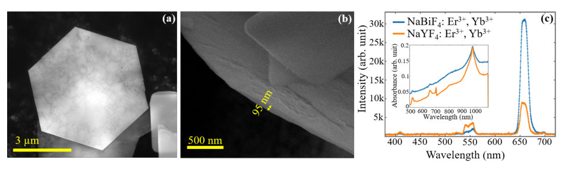
<figcaption class="paper-figure-caption"><b>Fig 2.</b> Fig. 1 (b) inset. We compare the brightness of a single NaBiF particle with a single NaYF4:</figcaption>
</figure>
<figure class="paper-figure-card">
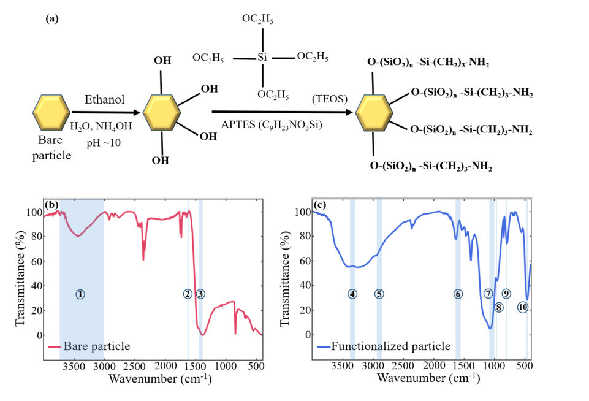
<figcaption class="paper-figure-caption"><b>Fig 3.</b> Figure 2: (a) Schematic of the Sequential Surface Modification of a NaBiF particle using TEOS and APTES via hydrolysis and condensation method. (b) FTIR spectra of a bare NaBiF particle, and (c) a surface-functionalized NaBiF particle.</figcaption>
</figure>
<figure class="paper-figure-card">
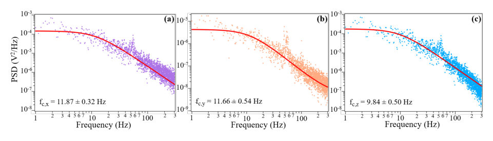
<figcaption class="paper-figure-caption"><b>Fig 4.</b> Figure 3: Power spectral density (PSD) of a trapped particle in (a) x-direction, (b) y- direction, and (c) z-direction. The power of the trapping laser is ∼35 mW in the sample plane. The solid lines represent Lorentzian fits of the form, PSDi(f) = A f2 c,i+f2, where fc,i is</figcaption>
</figure>
<figure class="paper-figure-card">
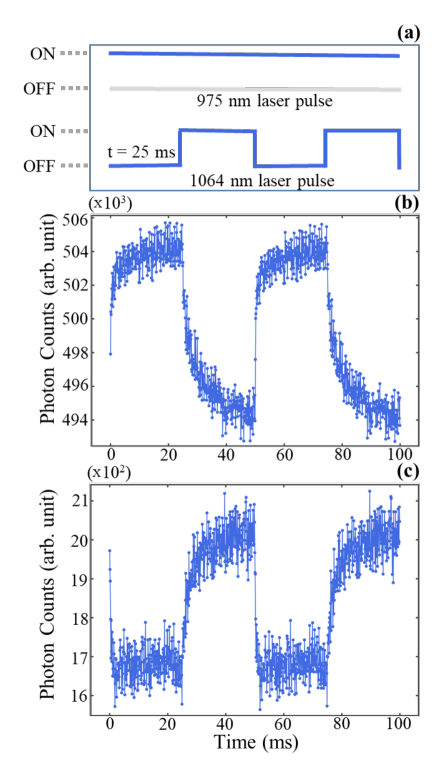
<figcaption class="paper-figure-caption"><b>Fig 5.</b> Figure 4: (a) Schematic of the pulse sequence used to probe the quenching dynamics. Exper- imentally observed effect on PL of a single NaBiF particle upon applying the pulse sequence in two power regimes - (a) the powers of 975 nm and 1064 nm lasers are ∼19 mW and ∼ 77 mW, respectively. (c) the powers of 975 nm and 1064 nm lasers are ∼0.3 mW and ∼77 mW, respectively.</figcaption>
</figure>
</div>

<p><strong>Summary.</strong> This research details the development of $ ext{NaBiF}_4:   ext{Er}^{3+},   ext{Yb}^{3+}$ upconversion particles as advanced bio-markers. The authors demonstrate that these particles exhibit superior optical properties compared to their Yttrium counterparts, coupled with surface chemistry enabling biocompatibility. Crucially, they establish protocols to actively control the particle's luminescence signal using two distinct near-infrared laser wavelengths.</p>
<p><strong>Why it may be interesting.</strong> The work involves complex non-linear optical processes (upconversion, stimulated emission depletion) in solid-state materials, which touches upon open quantum systems dynamics and energy transfer mechanisms relevant to AMO physics and quantum optics.</p>
<details>
<summary>Detailed structure</summary>
<p><strong>Main problem.</strong> The challenge is achieving high-contrast, sub-diffraction bioimaging using upconversion particles without requiring high-power lasers in noisy biological media.</p>
<p><strong>Main result.</strong> Bismuth-doped UCPs ($  ext{NaBiF}_4:   ext{Er}^{3+},   ext{Yb}^{3+}$) are shown to be superior biomarkers due to enhanced quantum yield and the ability to achieve controllable PL quenching/enhancement via dual-wavelength excitation.</p>
<p><strong>Method.</strong> The study combines optical characterization (PL spectroscopy, time-resolved measurements), physical modification (sol-gel coating, APTES functionalization), and modeling of energy transfer dynamics.</p>
<p><strong>Model / system.</strong> The system is based on lanthanide-doped upconversion particles ($   ext{NaBiF}_4$) excited by near-infrared lasers ($975 	ext{ nm}$ and $1064 	ext{ nm}$). The PL dynamics are modeled using a simplified stimulated emission depletion process involving three energy levels.</p>
<p><strong>Key observables.</strong> Quantum yield (3x overall, 4x red), systematic quenching/enhancement of PL by adjusting laser power, optical trapping stiffness ($\kappa$), and characteristic fluorescence lifetimes ($   au_1,   au_2$).</p>
<p><strong>Important parameters / regimes.</strong> Near-infrared excitation wavelengths ($975 	ext{ nm}, 1064 	ext{ nm}$), sub-diffraction particle thickness ($\sim 100 	ext{ nm}$), and the relative powers of the two exciting lasers.</p>
<p><strong>Assumptions / limitations.</strong> The PL dynamics are modeled as a simplified stimulated emission depletion process, and the initial studies on quenching/enhancement protocols are presented as proof-of-concept.</p>
<p><strong>Figures summary.</strong> Figures show SEM images comparing particle morphology; FTIR spectra confirm successful silica coating and amino functionalization; PL spectra compare $    ext{NaBiF}$ vs. $   ext{NaYF}$; and other figures detail the dependence of fluorescence lifetimes on laser powers and temperature.</p>
<p><strong>Paper structure.</strong> The paper progresses from establishing the physical superiority of $   ext{NaBiF}_4$ over $    ext{NaYF}$ (enhanced quantum yield) to demonstrating its multi-functionality: surface modification for biocompatibility, optical trapping capability, and finally, detailed control over PL emission via dual-wavelength excitation protocols.</p>
</details>
<details>
<summary>Abstract</summary>
<p>Lanthanide-doped upconversion particles (UCPs) have revolutionized optical bioimaging platforms because of their excellent photostability, non-toxicity, and utilization of near-infrared excitation, which facilitates deep tissue penetration with negligible autofluorescence. However, it remains a challenge to achieve high-contrast and sub-diffraction imaging in noisy biological media, without using a high-power laser. Here, we report various protocols applied to bismuth-doped UCPs address some of these challenges. Compared to the photoluminescence (PL) emission of the regular Yttrium doped UCPs, we observe a three-fold increment in the quantum yield of the overall emission of bismuth-UCPs, and a four-fold increment, specifically, in red emission. Leveraging this advantage, we devise a protocol employing two infrared wavelengths, 975 nm and 1064 nm, to selectively control the PL emission. Interestingly, our results reveal two distinct regimes in which PL can be systematically quenched or enhanced, by adjusting the 975 nm laser power. We model the overall dynamics as a simplified stimulated emission depletion process involving three energy levels. In addition, the particle has a thickness under sub-diffraction, shows optical trapping ability, and potential of surface functionalization to enable specific conjugation with diverse biospecimens. These studies establish bismuth doped UCPs as an excellent candidate in accomplishing advanced biomarker operating with enhanced signal-to-noise ratio and sub-diffraction imaging capabilities.</p>
</details>
<p><sub><a href="#top">↑ back to top</a></sub></p>

<p><a id="paper-2607.10464"></a></p>
<h3 id="effect-of-superconducting-fluctuations-on-nonreciprocal-dichroism-and-gyrotropy"><a href="http://arxiv.org/abs/2607.10464v1">Effect of superconducting fluctuations on nonreciprocal dichroism and gyrotropy</a></h3>
<p><strong>Authors:</strong> Alex Levchenko<br>
<strong>Type:</strong> theory · <strong>Category:</strong> other · <strong>PDF:</strong> <a href="https://arxiv.org/pdf/2607.10464v1">https://arxiv.org/pdf/2607.10464v1</a><br>
<strong>Analysis basis:</strong> full PDF text, analyzed in chunks
<strong>Topic relevance:</strong> <code>Keldysh / 2PI / non-Gaussian methods</code> <strong>1/5</strong> · <code>correlated / nonlocal dissipation</code> <strong>1/5</strong> · <code>driven-dissipative phase transition</code> <strong>1/5</strong> · <code>methods for driven-dissipative</code> <strong>1/5</strong></p>
<div class="figure-strip-hint">↔ Scroll figures horizontally</div>
<div class="paper-figures-scroll">
<figure class="paper-figure-card">
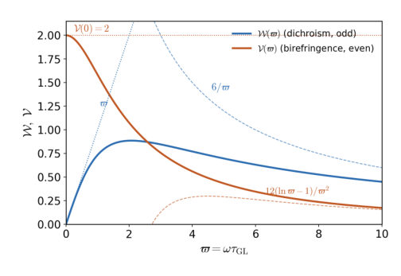
<figcaption class="paper-figure-caption"><b>Fig 1.</b> FIG. 1. Frequency functions of the nonreciprocal fluctuation conduc- tivity versus ϖ = ωτGL. The dissipative function W(ϖ) [Eq. (19), blue] controls nonreciprocal directional dichroism; it is odd in ω, rises as ϖ, peaks at ϖ ≃2.07, and decays as 6/ϖ. Its Kramers– Kronig partner V(ϖ) [Eq. (23), orange] controls gyrotropic birefrin- gence; it is even in ω, with V(0) = 2 and the tail 12(ln ϖ −1)/ϖ2. Dotted and dashed lines show the asymptotes.</figcaption>
</figure>
<figure class="paper-figure-card">
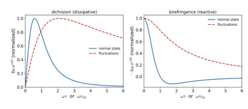
<figcaption class="paper-figure-caption"><b>Fig 2.</b> FIG. 2. Normalized frequency profiles of the nonreciprocal con- ductivity in the normal state (solid blue, argument ωτ) and in the fluctuation regime (dashed red, argument ωτGL). Left: dichroism, Re σodd. The normal-state curve is [2ωτ/(1 + ω2τ2)2]/(3 √</figcaption>
</figure>
</div>

<p><strong>Summary.</strong> This paper theoretically analyzes how fluctuations above the critical temperature ($T_c$) induce nonreciprocal electrical responses like dichroism and gyrotropy in 2D noncentrosymmetric superconductors. Using generalized Ginzburg-Landau theory, the authors show these effects critically depend on particle-hole asymmetry and require broken inversion/time-reversal symmetry. The results offer a pathway to probe superconducting dynamics using techniques like quantum noise spectroscopy.</p>
<p><strong>Why it may be interesting.</strong> The explicit derivation of nonreciprocal responses from fluctuation effects provides a concrete theoretical link between broken symmetries (inversion/time-reversal) and measurable optical properties in superconductors, relevant to understanding exotic quantum states.</p>
<details>
<summary>Detailed structure</summary>
<p><strong>Main problem.</strong> The study investigates how superconducting fluctuations induce nonreciprocal dichroism and gyrotropy in two-dimensional, noncentrosymmetric superconductors.</p>
<p><strong>Main result.</strong> These nonreciprocal effects require the simultaneous breaking of inversion and time-reversal symmetries and are dependent on particle-hole asymmetry. The reactive component (birefringence) shows a critical enhancement as temperature approaches $T_c$.</p>
<p><strong>Method.</strong> The authors utilize time-dependent Ginzburg-Landau theory, calculating the Aslamazov-Larkin contribution to the gyrotropic conductivity in closed form.</p>
<p><strong>Model / system.</strong> The model is a two-dimensional noncentrosymmetric superconductor, exemplified by gated transition metal dichalcogenides like $  ext{MoS}_2$. The theory incorporates particle-hole asymmetry and the cubic Lifshitz invariant of trigonal superconductors.</p>
<p><strong>Key observables.</strong> Nonreciprocal conductivity (dichroism and gyrotropy), which are analyzed via even-in-$k$ ($\sigma_{	ext{even}}$) and odd-in-$k$ ($\sigma_{	ext{odd}}$) components.</p>
<p><strong>Important parameters / regimes.</strong> Temperature relative to $T_c$, particle-hole asymmetry parameter ($\gamma_2$), and the frequency $\omega$.</p>
<p><strong>Assumptions / limitations.</strong> The analysis assumes that nonreciprocal terms do not alter the leading order results for gyrotropy near $T_c$ (Appendix B).</p>
<p><strong>Figures summary.</strong> Figure 1 illustrates the frequency dependence of the derived fluctuation conductivity, showing distinct behaviors for the dissipative dichroism ($W(\varpi)$) and reactive birefringence ($V(\varpi)$).</p>
<p><strong>Paper structure.</strong> The paper builds by first establishing the theoretical framework using TDGL theory, then calculating the $ ext{AL}$ contribution to gyrotropy, analyzing the symmetry dependence on particle-hole asymmetry ($\gamma_2$), and finally discussing experimental implications for probing superconducting dynamics.</p>
</details>
<details>
<summary>Abstract</summary>
<p>We study the spatially dispersive conductivity of a two-dimensional noncentrosymmetric superconductor, demonstrating that it acquires a nonreciprocal, odd-in-wavevector component from fluctuation-induced Cooper pairs above the critical temperature $T_c$. Utilizing time-dependent Ginzburg-Landau theory generalized to include particle-hole asymmetry and the cubic Lifshitz invariant of trigonal superconductors, we compute the Aslamazov-Larkin contribution to the gyrotropic conductivity in closed form, including its complete frequency dependence. The dissipative part describes nonreciprocal directional dichroism: it is odd in frequency and displays a nonmonotonic dependence, peaking at frequencies comparable to the decay rate of fluctuating Cooper pairs. Its Kramers-Kronig dual component describes gyrotropic birefringence, which remains finite in the static limit and is strongly enhanced as the temperature approaches $T_c$. Both effects require simultaneously broken inversion and time-reversal symmetries, are dependent on particle-hole asymmetry in close analogy to the fluctuation Hall effect, and trace to the same asymmetric Cooper-pair dispersion responsible for the superconducting diode effect and the giant magnetochiral anisotropy observed near $T_c$. This critical enhancement dominates over the smooth normal-state gyrotropy, which we evaluate for the same band model as a baseline. Finally, we frame our analysis within the context of gated transition metal dichalcogenides like MoS$_2$, discussing the implications for probing superconducting dynamics through nitrogen-vacancy-center quantum noise spectroscopy.</p>
</details>
<p><sub><a href="#top">↑ back to top</a></sub></p>

<p><a id="paper-2607.10509"></a></p>
<h3 id="surface-variables-description-of-axion-topological-materials"><a href="http://arxiv.org/abs/2607.10509v1">Surface Variables Description of Axion Topological Materials</a></h3>
<p><strong>Authors:</strong> Francisco J. Solis, Hugo García-Compeán<br>
<strong>Type:</strong> theory · <strong>Category:</strong> other · <strong>PDF:</strong> <a href="https://arxiv.org/pdf/2607.10509v1">https://arxiv.org/pdf/2607.10509v1</a><br>
<strong>Analysis basis:</strong> full PDF text, analyzed in chunks
<strong>Topic relevance:</strong> <code>Keldysh / 2PI / non-Gaussian methods</code> <strong>1/5</strong> · <code>analog quantum simulation</code> <strong>1/5</strong> · <code>methods for driven-dissipative</code> <strong>1/5</strong> · <code>spintronics-quantum-optics interface</code> <strong>1/5</strong></p>
<div class="figure-strip-hint">↔ Scroll figures horizontally</div>
<div class="paper-figures-scroll">
<figure class="paper-figure-card">
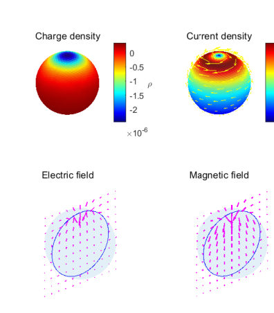
<figcaption class="paper-figure-caption"><b>Fig 1.</b> Fig. 1 Response of a topological insulator to the field of a point charge. Using dimensionless quantities, the sphere radius is R = 1. An unit charge is located at z = 2. Top panels show the induced surface charge and current densities. Bottom panels show electric and magnetic field maps evaluated at a vertical plane through the sphere center. These fields are created by the induced charge and current and do not include the external field.</figcaption>
</figure>
<figure class="paper-figure-card">
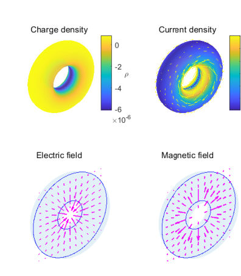
<figcaption class="paper-figure-caption"><b>Fig 2.</b> Fig. 4 Response of a toroidal shape topological insulator to the presence of a unit charge at its center. The induced current circulates in opposite directions in the front and back of the torus.</figcaption>
</figure>
</div>

<p><strong>Summary.</strong> This paper develops a powerful theoretical framework to analyze how axion topological insulators respond to external electric and magnetic fields. By reformulating the problem using 'surface variables' instead of bulk descriptions, the authors derive solvable integral equations for induced surface charges and currents. This method allows for detailed numerical simulations on complex geometries like spheres and tori.</p>
<p><strong>Why it may be interesting.</strong> While not directly focused on quantum information, the rigorous mathematical treatment of topological responses using reduced-dimensionality surface variable methods is highly relevant to modern condensed matter theory dealing with emergent electromagnetic properties in novel materials.</p>
<details>
<summary>Detailed structure</summary>
<p><strong>Main problem.</strong> The study focuses on determining the macroscopic quasi-static magnetoelectric response of axion topological materials, specifically topological insulators, when subjected to external static electric and magnetic fields.</p>
<p><strong>Main result.</strong> The authors derive a set of integral equations governing effective surface charge and current densities, providing exact analytic solutions for axial-symmetric cases and developing a boundary finite element method for complex geometries.</p>
<p><strong>Method.</strong> The core methodology involves reformulating the bulk field equations using 'surface variables' (effective surface charge/current), leading to linear integral equations that are solved numerically via a boundary finite element approach.</p>
<p><strong>Model / system.</strong> The system is an axion topological material characterized by a sharp discontinuity in the axion field ($    heta$). The physics is governed by modified Maxwell's equations incorporating induced sources derived from $
abla    heta$, leading to integral equations for surface variables.</p>
<p><strong>Key observables.</strong> Effective surface charge density ($\omega_s$) and surface current density ($s_s$), as well as the resulting electric and magnetic fields.</p>
<p><strong>Important parameters / regimes.</strong> Quasi-static regime, external static E and B fields, geometry (spheres, tori).</p>
<p><strong>Assumptions / limitations.</strong> The analysis assumes a quasi-static limit and treats $
abla    heta$ as localized at material interfaces, allowing the problem to be reduced to surface integral equations.</p>
<p><strong>Figures summary.</strong> Figures illustrate the calculated field distributions (E and B) and induced charges/currents for various geometries like tori and hollow spheres under external fields or point charges.</p>
<p><strong>Paper structure.</strong> The paper follows a logical progression: establishing the Hamiltonian formulation, introducing surface variables to derive integral equations, presenting analytic solutions for simple cases, detailing the numerical boundary finite element method, and finally applying this framework to complex geometries.</p>
</details>
<details>
<summary>Abstract</summary>
<p>We study the response of axion topological materials under the presence of external static electric and magnetic fields. We focus on the macroscopic quasi-static magnetoelectric response of topological insulators. We use techniques based on surface variables that have been previously employed in soft condensed matter problems for the description of heterogeneous systems composed of multiple homogeneous materials. A complete description of the whole system is written in terms of surface degrees of freedom, which in this case correspond to effective surface charge and surface current densities. We obtain a set of integral equations satisfied by these variables. We present exact analytic solutions for axial-symmetric cases. We develop a numerical method for the solution of the integral equations by means of a boundary finite element method. We apply the numerical method to topological insulators with different geometries such as spheres, hollow spheres and toroidal surfaces. We show that that a variational principle can be used to recover the surface variables equations.</p>
</details>
<p><sub><a href="#top">↑ back to top</a></sub></p>

<p><a id="paper-2607.10937"></a></p>
<h3 id="a-minimal-model-for-the-weyl-nodes-and-fermi-arcs-of-ptbimath1846math"><a href="http://arxiv.org/abs/2607.10937v1">A minimal model for the Weyl nodes and Fermi arcs of PtBi$_2$</a></h3>
<p><strong>Authors:</strong> Tobias Cristófoli, Manuel Alonso Lemos, Jorge I. Facio, Pablo S. Cornaglia<br>
<strong>Type:</strong> theory · <strong>Category:</strong> other · <strong>PDF:</strong> <a href="https://arxiv.org/pdf/2607.10937v1">https://arxiv.org/pdf/2607.10937v1</a><br>
<strong>Analysis basis:</strong> full PDF text, analyzed in chunks
<strong>Topic relevance:</strong> <code>Keldysh / 2PI / non-Gaussian methods</code> <strong>1/5</strong> · <code>analog quantum simulation</code> <strong>1/5</strong> · <code>spintronics-quantum-optics interface</code> <strong>1/5</strong></p>
<div class="figure-strip-hint">↔ Scroll figures horizontally</div>
<div class="paper-figures-scroll">
<figure class="paper-figure-card">
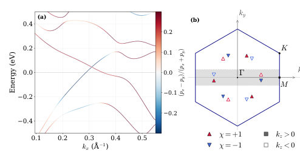
<figcaption class="paper-figure-caption"><b>Fig 1.</b> Fig. 1: (a) Calculated electronic band structure in the vicinity of a Weyl node. The color scale indicates the weight of the Bi 6px and 6py orbitals, showing that the bands forming the Weyl node are predominantly of in-plane Bi 6p character. (b) Weyl points (WPs) in the Brillouin zone (top view). The twelve nodes form a single orbit of w = (0.324, 0.041, −0.152) 2π/a under the C3v point group and time reversal T . The threefold rotation C3 and T (k →−k) connect WPs of equal chirality (red ▲, χ = +1; blue ▼, χ = −1), whereas the mirror planes σv (one acting as ky →−ky) connect WPs of opposite chirality. Filled/open markers denote kz ≷0. The shaded strip spans the zone along kx and encloses...</figcaption>
</figure>
<figure class="paper-figure-card">
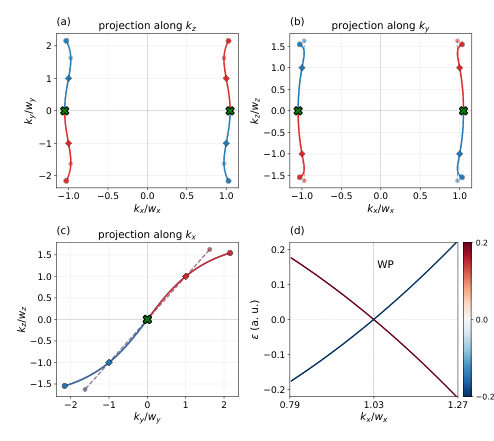
<figcaption class="paper-figure-caption"><b>Fig 2.</b> Fig. 2: (a)–(c) Weyl-node trajectories in momentum space as the SOC coupling intensity λ is increased: (a) projection along kz. (b) projection along ky, and (c) projection along kx. Solid lines correspond to the parameters in Table 1 and dashed lines to g3 = g4 = 0; red and blue indicate the chirality χ = +1 and χ = −1, respectively. Rhombuses mark the spinless starting points (λ = 0), filled circles correspond to nodes surviving at λ = 1, and green crosses the pairwise annihilation events. (d) Electronic band structure along kx/wx through a Weyl node at full SOC. The color scale indicates the weight of the px and py orbitals.</figcaption>
</figure>
<figure class="paper-figure-card">
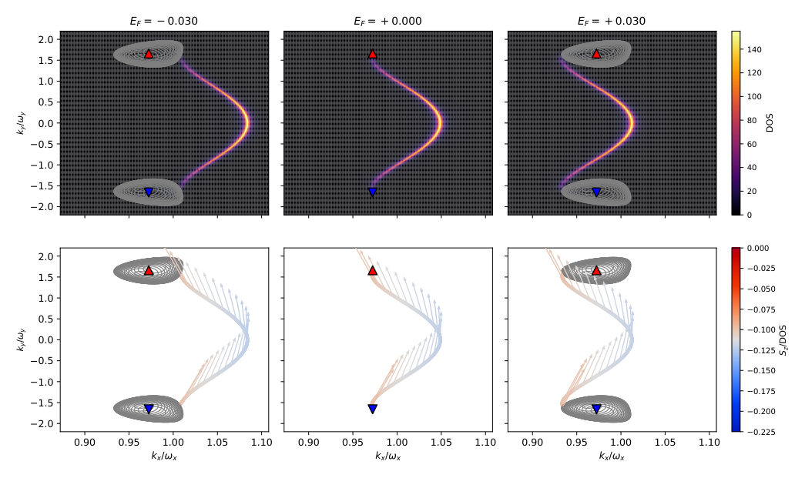
<figcaption class="paper-figure-caption"><b>Fig 3.</b> Fig. 3: The top row shows the surface density of states ρ(kx, ky; EF ) at three Fermi energies offset from the Weyl-node energy EW by ∆E ∈{−0.03, 0, +0.03} (left to right). The bottom row displays the Fermi arc on the same surface; each point is colored by the normalized out-of-plane spin polarization Sz/ρ, and arrows indicate the in-plane component (Sx, Sy)/ρ. Solid gray curves overlay the bulk constant-energy contours εn(kx, ky; kz) = EF for a representative sampling of kz ∈[−π, π]. The red ▲(blue ▼) marks the surface-Brillouin-zone projections of bulk Weyl nodes with positive (negative) chirality. The model parameters as in Table 1.</figcaption>
</figure>
</div>

<p><strong>Summary.</strong> This theoretical work develops a minimal, symmetry-constrained model for describing Weyl nodes and Fermi arcs in the topological semimetal $   ext{PtBi}_2$. By incorporating spin-orbit coupling terms derived from DFT, the authors successfully predict how these nodes split and annihilate. The resulting Hamiltonian provides a robust starting point for understanding surface superconductivity mechanisms in such materials.</p>
<p><strong>Why it may be interesting.</strong> While focused on topological materials physics rather than AMO systems, the rigorous use of symmetry constraints to build an effective Hamiltonian from first principles is highly relevant. The techniques for analyzing band topology and emergent symmetries are transferable to understanding exotic phases in quantum simulators or superconducting qubits.</p>
<details>
<summary>Detailed structure</summary>
<p><strong>Main problem.</strong> The work aims to develop a minimal, symmetry-constrained theoretical model for understanding the topological electronic features—Weyl nodes and Fermi arcs—in the Weyl semimetal $    ext{PtBi}_2$. This bridges the gap between complex <em>ab initio</em> calculations and simplified effective descriptions.</p>
<p><strong>Main result.</strong> A minimal Hamiltonian was constructed that successfully reproduces the topology, captures the spin-orbit coupling (SOC)-driven splitting, and models the subsequent annihilation of Weyl nodes in momentum space. The model also describes the characteristic spin-momentum locking on surface Fermi arcs.</p>
<p><strong>Method.</strong> The methodology combines symmetry analysis (using tools like qsymm) with continuum Hamiltonian construction, guided by DFT results to constrain low-energy band physics.</p>
<p><strong>Model / system.</strong> The system is trigonal $    ext{PtBi}<em 3v>2$, modeled using a tight-binding approach incorporating orbital degrees of freedom (${p_x, p_y}$) and SOC terms. The Hamiltonian is built sector-by-sector to enforce crystal symmetries ($C</em>$) across multiple coupled blocks.</p>
<p><strong>Key observables.</strong> Weyl node chirality ($\chi$), Fermi arc spin texture (spin polarization $\langle S_z 
angle/
ho$), and the evolution of nodes/arcs as a function of SOC coupling strength ($\lambda$).</p>
<p><strong>Important parameters / regimes.</strong> SOC couplings ($g_1, g_2$, etc.), critical coupling strengths ($g_c$) for node annihilation, and momentum-dependent terms derived from DFT.</p>
<p><strong>Assumptions / limitations.</strong> The model assumes that the low-energy physics is dominated by specific orbital components ($ ext{Bi } 6p$ orbitals) and that the Hamiltonian can be effectively described by a minimal set of symmetry-allowed terms.</p>
<p><strong>Figures summary.</strong> Figures illustrate band structures near Weyl nodes, map the twelve Weyl points in the Brillouin zone under $C_{3v}$ symmetry, and show the evolution of node trajectories as SOC strength increases. Surface density of states plots confirm the presence and spin texture of Fermi arcs.</p>
<p><strong>Paper structure.</strong> The paper progresses from establishing a basic model constrained by symmetries to incorporating SOC terms that cause node splitting and annihilation. It then extends this description to incorporate full $C_{3v}$ symmetry via multi-sector coupling, culminating in a detailed analysis of how different SOC components affect spin texture and nodal structure.</p>
</details>
<details>
<summary>Abstract</summary>
<p>Weyl semimetals host topologically protected Fermi arcs on their surfaces, originating from the Chern number of the bulk Weyl nodes. In trigonal PtBi$_2$, superconducting signatures have been associated with the Fermi arcs. Theoretical descriptions of this surface superconductivity have so far relied on effective models that are not directly tied to the microscopic electronic structure of the material. In this work we develop a minimal description of the low-energy bands guided by density functional theory calculations and fully constrained by the relevant crystalline and time-reversal symmetries. The model captures the evolution of the Weyl nodes with spin-orbit coupling, including node annihilations, and is able to describe the spin-momentum locking of the surface Fermi arcs. It reproduces the orbital content and the band topology of PtBi$_2$ and provides a starting point for further studies.</p>
</details>
<p><sub><a href="#top">↑ back to top</a></sub></p>

<p><a id="paper-2607.10954"></a></p>
<h3 id="exact-vector-akhmediev-breathers-dominated-by-a-linearly-stable-frequency"><a href="http://arxiv.org/abs/2607.10954v1">Exact vector Akhmediev breathers dominated by a linearly stable frequency</a></h3>
<p><strong>Authors:</strong> Wen-Rong Sun, Chong Liu, Lei Wang, Fabio Baronio<br>
<strong>Type:</strong> theory · <strong>Category:</strong> other · <strong>PDF:</strong> <a href="https://arxiv.org/pdf/2607.10954v1">https://arxiv.org/pdf/2607.10954v1</a><br>
<strong>Analysis basis:</strong> full PDF text, analyzed in chunks
<strong>Topic relevance:</strong> <code>driven-dissipative phase transition</code> <strong>1/5</strong> · <code>interference shaping light</code> <strong>1/5</strong> · <code>non-equilibrium dynamics</code> <strong>1/5</strong></p>
<div class="figure-strip-hint">↔ Scroll figures horizontally</div>
<div class="paper-figures-scroll">
<figure class="paper-figure-card">
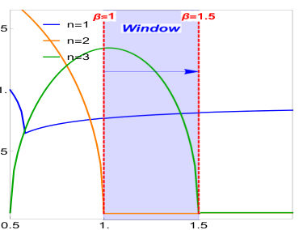
<figcaption class="paper-figure-caption"><b>Fig 1.</b> FIG. 1. Gain curves G(n, β) of the first three modulation harmonics (n = 1, 2, 3) for the focusing Manakov system with a = 1 and ω = 1. The second harmonic (n = 2) becomes linearly stable (gain zero) for β ≥1, while the first (n = 1) and third (n = 3) harmonics remain unstable in the shaded window 1 ≤β &lt; 1.5. This window, where unstable modes alternate with a stable one, is the parameter range explored in this work.</figcaption>
</figure>
<figure class="paper-figure-card">
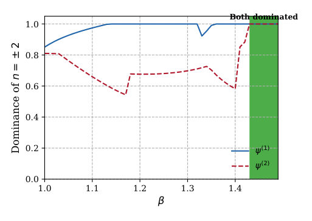
<figcaption class="paper-figure-caption"><b>Fig 2.</b> FIG. 2. Dominance D(j) of the n = ±2 sideband at the peak of the third-order Akhmediev breather as a function of β. The blue solid (red dashed) line represents the ψ(1) (ψ(2)) component. The green shaded area marks the parameter in- terval where both polarizations are simultaneously dominated by the linearly stable 2ω harmonic (D ≈1).</figcaption>
</figure>
<figure class="paper-figure-card">
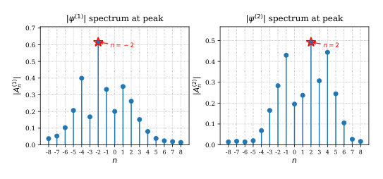
<figcaption class="paper-figure-caption"><b>Fig 3.</b> FIG. 5. Discrete Fourier amplitudes |A(1) n | (left) and |A(2) n | (right) at the peak of the third-order Akhmediev breather for β = 1.44. In both polarization components, the n = ±2 harmonic dominates the spectrum despite being linearly stable, exceeding even the unstable modes n = ±1 and n = ±3 that seed the breather. The red stars mark the maximum spectral component in each case.</figcaption>
</figure>
<figure class="paper-figure-card">
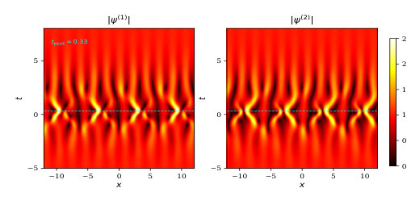
<figcaption class="paper-figure-caption"><b>Fig 4.</b> FIG. 3. Spatio-temporal evolution of |ψ(1)| (left) and |ψ(2)| (right) for the exact third-order Akhmediev breather at β = 1.44.</figcaption>
</figure>
<figure class="paper-figure-card">
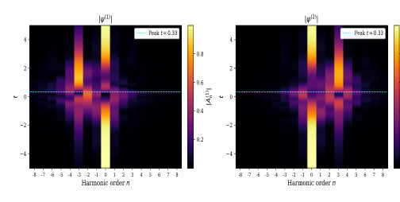
<figcaption class="paper-figure-caption"><b>Fig 5.</b> FIG. 4. Temporal evolution of the discrete Fourier ampli- tudes |A(1) n | (left) and |A(2) n | (right) from t = −5 to t = 5 at β = 1.44. The horizontal dashed line marks the breather peak at t = 0.33, where the linearly stable n = ±2 harmonic becomes the dominant spectral component in both polariza- tions, exceeding the unstable modes n = ±1 and n = ±3 that seed the dynamics.</figcaption>
</figure>
</div>

<p><strong>Summary.</strong> This paper analyzes Akhmediev breathers in the Manakov system, challenging the assumption that breather spectra must be governed by linearly unstable modes. Through numerical simulation and detailed analysis of nonlinear forcing, the authors prove that a spectrally stable harmonic can spontaneously become dominant at the breather's peak. This mechanism is driven purely by four-wave mixing, offering new insights into nonlinear wave dynamics across various physical platforms.</p>
<p><strong>Why it may be interesting.</strong> This work provides a concrete example of how strong nonlinearity can fundamentally alter the spectral dynamics of wave packets, suggesting that energy transfer mechanisms (like four-wave mixing) can overcome linear stability constraints in physical systems relevant to quantum optics and Bose-Einstein condensates.</p>
<details>
<summary>Detailed structure</summary>
<p><strong>Main problem.</strong> The study investigates whether an Akhmediev breather (AB) can be spectrally dominated by a frequency component that is linearly stable, contrary to the usual expectation derived from modulation instability theory.</p>
<p><strong>Main result.</strong> The authors demonstrate that in the Manakov system, a stable harmonic component ($n=\pm 2$) can spontaneously emerge and dominate the spectrum of an AB peak, driven entirely by four-wave mixing from initially unstable modes.</p>
<p><strong>Method.</strong> The analysis combines linear stability theory (calculating MI gain) with numerical simulations using the Manakov equation to track spectral energy distribution over time.</p>
<p><strong>Model / system.</strong> The system is modeled by the Manakov nonlinear Schrödinger equation, governing two coupled wave components ($\psi^{(1)}, \psi^{(2)}$). The analysis focuses on constructing and simulating a third-order Akhmediev breather solution.</p>
<p><strong>Key observables.</strong> Dominance measure $D(j)$ (quantifying stable harmonic contribution), Fourier amplitudes $|A_n|$, and the nonlinear forcing term derived from four-wave mixing.</p>
<p><strong>Important parameters / regimes.</strong> The wavenumber offset $eta$ is critical, with a specific window ($1 \le eta < 1.5$) identified where this spectral dominance occurs.</p>
<p><strong>Assumptions / limitations.</strong> The analysis assumes the validity of the Manakov system description and relies on isolating the nonlinear forcing term to quantify its source (four-wave mixing).</p>
<p><strong>Figures summary.</strong> Figures illustrate the transition of the dominance measure $D(j)$ towards unity for specific parameters, show the time evolution of Fourier amplitudes peaking at stable harmonics, and confirm that four-wave mixing accounts for most of the nonlinear driving.</p>
<p><strong>Paper structure.</strong> The paper progresses from establishing the theoretical conflict (stable vs. unstable spectral control) to constructing the AB solution, performing linear stability analysis, running numerical simulations on the Manakov system, and finally quantifying the mechanism via nonlinear forcing analysis.</p>
</details>
<details>
<summary>Abstract</summary>
<p>In the scalar nonlinear Schrodinger equation, an Akhmediev breather (AB) is dominated by a frequency that lies inside the modulation instability gain band. This exactly correspondence between instability and breathers is challenged in vector systems such as the Manakov system, where the gain spectrum splits into disconnected lobes separated by stable gaps. We analytically and numerically construct an AB that is generated by unstable modes but is spectrally dominated by a stable harmonic at its peak. Numerical simulations starting from a simple continuous wave background perturbed only by the unstable harmonics confirm that the stable component emerges spontaneously and becomes dominant without any initial seed. We identify the precise parameter window in which this phenomenon occurs and show that this passive amplification of the linearly stable component is driven by four-wave mixing, which accounts for 96% of the nonlinear forcing. Given the universality of the Manakov system across nonlinear physics, from nonlinear optics to ultracold quantum gases, these results open an experimentally accessible new perspective on breather dynamics, one in which linearly stable frequencies can dominate.</p>
</details>
<p><sub><a href="#top">↑ back to top</a></sub></p>

<p><a id="paper-2607.10328"></a></p>
<h3 id="lifshitz-kosevich-theory-of-anomalous-landau-levels-in-topological-flat-bands"><a href="http://arxiv.org/abs/2607.10328v1">Lifshitz-Kosevich Theory of Anomalous Landau Levels in Topological Flat Bands</a></h3>
<p><strong>Authors:</strong> Chao-Xing Liu<br>
<strong>Type:</strong> theory · <strong>Category:</strong> other · <strong>PDF:</strong> <a href="https://arxiv.org/pdf/2607.10328v1">https://arxiv.org/pdf/2607.10328v1</a><br>
<strong>Analysis basis:</strong> full PDF text, analyzed in chunks
<strong>Topic relevance:</strong> <code>Keldysh / 2PI / non-Gaussian methods</code> <strong>1/5</strong> · <code>analog quantum simulation</code> <strong>1/5</strong> · <code>driven-dissipative phase transition</code> <strong>1/5</strong></p>
<div class="figure-strip-hint">↔ Scroll figures horizontally</div>
<div class="paper-figures-scroll">
<figure class="paper-figure-card">
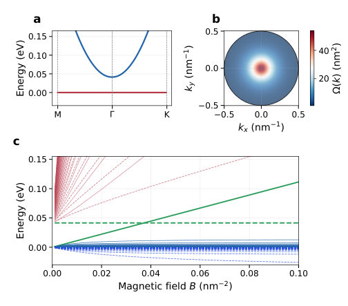
<figcaption class="paper-figure-caption"><b>Fig 1.</b> FIG. 1. (a) Band dispersion at the ideal flat-band point along the M–Γ–K path; the dispersive and flat bands are blue and red, respectively. (b) Berry-curvature distribution of the spin- up flat band. (c) Landau-level spectrum; normal, anomalous, and zeroth LLs are red, blue, and green, respectively, while solid and dashed curves distinguish the two spin sectors. Pa- rameters: a = 1.115 eV · nm2, c = 0.215 eV · nm, E0 = 0 eV.</figcaption>
</figure>
<figure class="paper-figure-card">
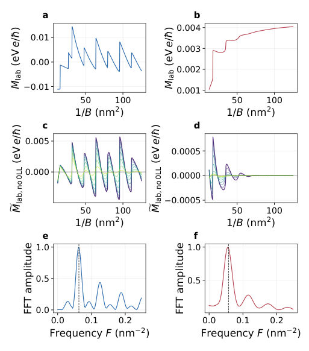
<figcaption class="paper-figure-caption"><b>Fig 2.</b> FIG. 2. Fixed-density magnetization oscillations. (a) Full physical-field magnetization MB in the normal regime, ρ = +0.01 nm−2. (b) Full physical-field magnetization in the anomalous regime, ρ = −0.15 nm−2. (c,d) Corresponding background-subtracted oscillatory magnetization at kBT = (2.00, 3.07, 4.71, 7.22, 11.1, 17.0, 26.1, 40.0) × 10−4 eV, or- dered from purple to yellow. (e,f) Corresponding normalized FFT spectra; dashed vertical lines mark Fρ = 2π|ρ|, mea- sured in nm−2. Blue and red denote the normal and anoma- lous regimes, respectively.</figcaption>
</figure>
<figure class="paper-figure-card">

<figcaption class="paper-figure-caption"><b>Fig 3.</b> Fig. 2(c) when reducing magnetic field B. The oscilla- tion frequency in 1/B can be extracted from the Fourier transform of magnetization oscillation, and the peaks in Fig. 2(e) and (f) correspond well to the fundamental oscillation frequency Fρ = 2π|ρS| for both normal and anomalous LLs, where ρS counts the active carriers in the regime S (electron, shallow-hole and deep-hole regimes) and its connection to ρ can be found in SM Sec.D. Al- though the Fermi surface area is meaningless for the flat bands, the quantum oscillation still follows from simple LL counting: each filled LL accommodates D = B/(2π) carriers per unit area, so n∗≈2π|ρS|/B, leading to the oscillation frequency independent...</figcaption>
</figure>
<figure class="paper-figure-card">
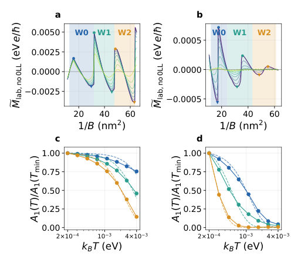
<figcaption class="paper-figure-caption"><b>Fig 4.</b> FIG. 3. Thermal damping extracted from local os- cillation windows. (a,b) Oscillatory magnetization in the normal regime, ρ = +0.01 nm−2, and anoma- lous regime, ρ = −0.15 nm−2, respectively, at kBT = (2.00, 3.07, 4.71, 7.22, 11.1, 17.0, 26.1, 40.0) × 10−4 eV, or- dered from purple to yellow. In (a,b), W0, W1, and W2 are blue, teal, and orange, respectively. (c,d) Normalized p = 1 harmonic amplitudes for the windows in (a,b), respectively; dashed curves are standard-LK fits.</figcaption>
</figure>
<figure class="paper-figure-card">
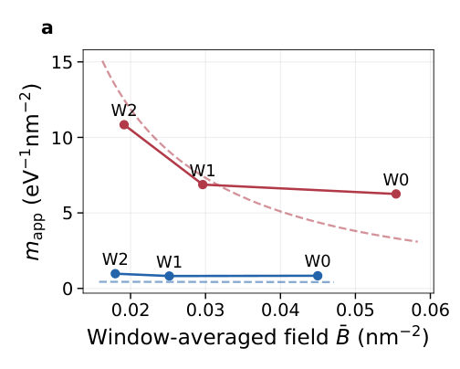
<figcaption class="paper-figure-caption"><b>Fig 5.</b> FIG. 4. (a) Apparent effective mass, measured in eV−1nm−2, versus window-averaged magnetic field. Solid markers show masses extracted from the Fig. 3 damping fits for the normal regime, ρ = +0.01 nm−2 (blue), and anomalous regime, ρ = −0.15 nm−2 (red). Dashed curves show the corresponding analytical LK trends; labels identify the local windows.</figcaption>
</figure>
</div>

<p><strong>Summary.</strong> This work develops an extension of Lifshitz-Kosevich theory to describe quantum oscillations arising from anomalous Landau levels found in topological flat bands. By analyzing the temperature dependence of these oscillations, the authors demonstrate that the thermal damping factor yields a measurable effective mass directly proportional to the system's underlying quantum geometric structure.</p>
<p><strong>Why it may be interesting.</strong> The direct link established between measurable transport properties (thermal damping of oscillations) and fundamental geometric invariants (the quantum metric) provides a powerful new experimental probe for characterizing topological band structures in condensed matter systems.</p>
<details>
<summary>Detailed structure</summary>
<p><strong>Main problem.</strong> To determine how quantum oscillations persist in topological flat bands, which naively suggest thermal suppression due to zero group velocity, and whether the thermal damping factor can reveal information about the underlying quantum geometry.</p>
<p><strong>Main result.</strong> The paper derives an LK theory for anomalous Landau levels (ALLs), showing that their persistent oscillations yield a finite, field-dependent effective mass whose thermal damping directly measures the quantum metric of the flat band.</p>
<p><strong>Method.</strong> The authors adapt the Lifshitz-Kosevich formalism to analyze the grand potential and magnetization oscillations in the presence of an anomalous LL spacing. They fit temperature dependence using standard LK forms to extract effective masses.</p>
<p><strong>Model / system.</strong> The study uses a minimal model Hamiltonian describing topological flat bands, relevant to moiré materials, which possess Time-Reversal and inversion symmetries. The analysis is performed under a perpendicular magnetic field at fixed carrier density.</p>
<p><strong>Key observables.</strong> Magnetization ($M$) oscillations as a function of $1/B$, the extracted effective mass ($m^*_{	ext{eff}}$), and the thermal damping factor derived from the fundamental harmonic amplitude ($A_1(T)$).</p>
<p><strong>Important parameters / regimes.</strong> Magnetic field ($B$), temperature ($T$), carrier density ($
ho$), and parameters related to the quantum metric tensor.</p>
<p><strong>Assumptions / limitations.</strong> The analysis relies on a minimal model with perfectly flat topological bands, and it treats the local LK fit as a diagnostic tool for measuring the effective mass derived from thermal damping.</p>
<p><strong>Figures summary.</strong> Figures show band dispersion, Berry curvature distribution, LL spectra, and magnetization oscillations ($M$ vs $1/B$) for both normal and anomalous LLs. Subsequent figures compare extracted effective masses against analytical expectations.</p>
<p><strong>Paper structure.</strong> The paper first establishes the problem by contrasting conventional Landau quantization with flat bands. It then adapts the LK formalism to derive oscillatory terms ($\delta\Omega$), analyzes the thermal damping factor ($R_T(p)$), and finally extracts the field-dependent effective mass, linking it theoretically to the quantum metric.</p>
</details>
<details>
<summary>Abstract</summary>
<p>In conventional metals, quantum oscillations arise from Landau quantization of Fermi-surface cyclotron orbits, whose dynamics are governed by the Fermi velocity and cyclotron effective mass within Lifshitz-Kosevich (LK) theory. A perfectly flat band, by contrast, has vanishing group velocity, which would naively imply an infinite cyclotron mass and complete thermal suppression of quantum oscillations. Yet topological flat bands can support anomalous Landau levels (LLs) whose finite-field spacing is generated by quantum geometry rather than band curvature, allowing quantum oscillations to persist. This work addresses how such anomalous flat-band LLs behave within the LK framework and whether their thermal damping can reveal quantum geometric information. Using a minimal model with exactly flat topological bands, we derive an LK theory for these anomalous LLs and analyze fixed-density magnetization oscillations. The resulting oscillations exhibit a finite LK effective mass that is substantially larger than the normal-band value and possesses a strong magnetic-field dependence. In the weak-field limit, this anomalous mass reflects the quantum geometric origin of the LL spacing and scales inversely with both the magnetic field and the trace of the quantum metric. Thus, thermal damping of flat-band quantum oscillations directly measures the quantum metric, establishing quantum oscillations as a probe to flat-band quantum geometry.</p>
</details>
<p><sub><a href="#top">↑ back to top</a></sub></p>

<p><a id="paper-2607.10979"></a></p>
<h3 id="single-contact-problem-in-atomically-flat-interfaces-a-simulation-approach"><a href="http://arxiv.org/abs/2607.10979v1">Single-Contact Problem in Atomically Flat Interfaces: a Simulation Approach</a></h3>
<p><strong>Authors:</strong> Rui Dong, Ahmed Uluca, Graham Cross, Stefano Sanvito<br>
<strong>Type:</strong> both · <strong>Category:</strong> other · <strong>PDF:</strong> <a href="https://arxiv.org/pdf/2607.10979v1">https://arxiv.org/pdf/2607.10979v1</a><br>
<strong>Analysis basis:</strong> full PDF text, analyzed in chunks
<strong>Topic relevance:</strong> <code>Frenkel-Kontorova</code> <strong>1/5</strong></p>
<div class="figure-strip-hint">↔ Scroll figures horizontally</div>
<div class="paper-figures-scroll">
<figure class="paper-figure-card">
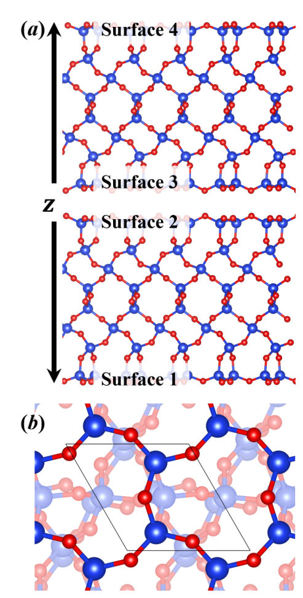
<figcaption class="paper-figure-caption"><b>Fig 1.</b> Figure 1: The structure of the tribo-interface considered in this study. (a) Atomic structure of the SiO2-SiO2 flat-on-flat interfaces, and (b) top view of the “dense” surface of α-quarts SiO2. Highlighted in (b) is the six-ring reconstructed surface. Color code: silicon = blue, oxygen = red.</figcaption>
</figure>
<figure class="paper-figure-card">
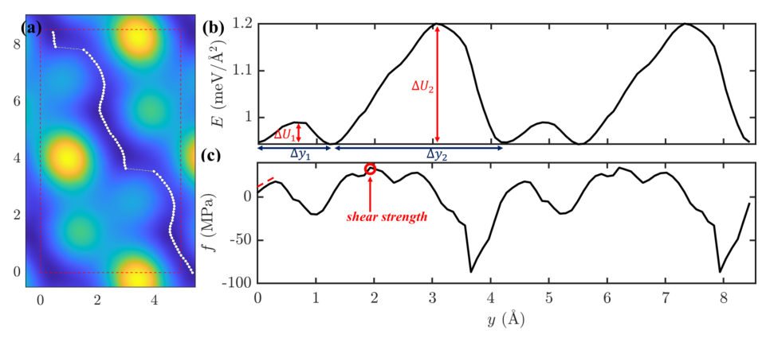
<figcaption class="paper-figure-caption"><b>Fig 2.</b> Figure 2: Minimum energy pathway on the constant-pressure ISPES and the energy and force profiles at 0.5 GPa normal load. (a) The constant-pressure ISPES of SiO2-SiO2 flat- on-flat interface. The white line shows the minimum energy pathway and the red dotted lines denotes the rectangular 1×2 supercell. Panel (b) shows the energy profile along the pathway. Zero energy is associated to the global energy minimum obtained at zero normal load. Red arrows mark the energy loss to overcome each barrier. The corresponding force along the y-axis of the pathway is shown in (c). This is normalized to have the unit of stress. The dashed line shows the shear modulus for a tiny displacement and red circle...</figcaption>
</figure>
<figure class="paper-figure-card">
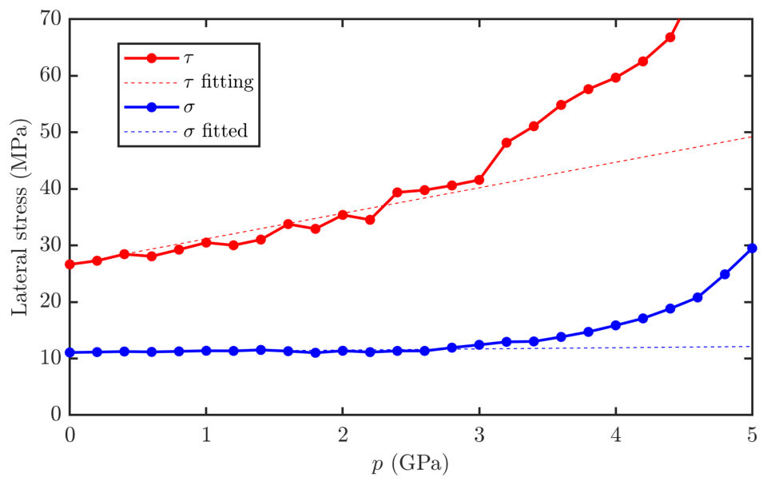
<figcaption class="paper-figure-caption"><b>Fig 3.</b> Figure 3: The shear strength, τ, and the coefficient of friction in minimal-scale sliding, σ, are plotted against the normal load, p, together with their linear fit. Here both τ and σ are extracted from the constant-pressure ISPES. Both quantities have a linear dependence on the external load in the low pressure limit.</figcaption>
</figure>
<figure class="paper-figure-card">
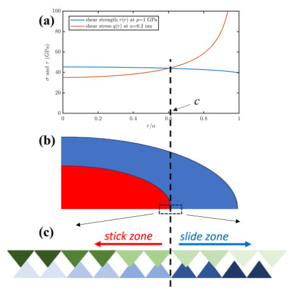
<figcaption class="paper-figure-caption"><b>Fig 4.</b> Figure 4: Demonstration of the modified Mindlin model for atomically flat contacts. (a) For SiO2-SiO2 contact at 1GPa, the radial distribution of shear strength and shear stress of fully stick contact with lateral displacement of 0.2 nm. The crossover shows the boundary of stick zone. (b) Demonstration of the stick zone (red) and sliding zone (blue). (c) Demonstration of atomic scale asperities (atomic level corrugation) at the boundary.</figcaption>
</figure>
<figure class="paper-figure-card">
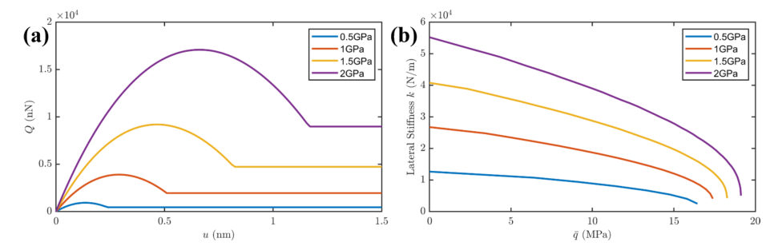
<figcaption class="paper-figure-caption"><b>Fig 5.</b> Figure 5: SiO2-SiO2 interface sliding characteristics obtained from the modified Mindlin model at various normal pressures. (a) Total lateral force versus sliding distance of single strike sliding. When the lateral displacement increases, the lateral stress in the stick zone increases causing the stick zone to shrink. Total lateral force reaches a maximum then dropping to a constant sliding force. (b) Effective lateral stiffness in oscillation at various normal loads. One assumes the tip does lateral oscillation under load control and the force- displacement relation follows data in (a). Average lateral stress is calculated for oscillations with different mean displacement. See text for...</figcaption>
</figure>
</div>

<p><strong>Summary.</strong> This paper investigates friction at nanoscale contacts using crystalline SiO2/SiO2 interfaces. It develops a modified continuum model that integrates atomistic simulation results for shear strength and adhesion effects. The resulting framework successfully predicts experimental observations, particularly the stiffness collapse during sliding, demonstrating its relevance to realistic micro-tribology.</p>
<p><strong>Why it may be interesting.</strong> While focused on solid mechanics and tribology, the development of a multiscale constitutive model that accurately captures transition regimes (stick-slip) by incorporating non-linear material properties (adhesion, load dependence) is relevant to understanding complex boundary conditions in quantum systems or interfaces where classical assumptions break down.</p>
<details>
<summary>Detailed structure</summary>
<p><strong>Main problem.</strong> The work aims to bridge the theoretical understanding of superlubricity at atomically flat interfaces with the reality of tribological systems governed by Hertzian contact geometry.</p>
<p><strong>Main result.</strong> A modified Mindlin model, incorporating load-dependent shear strength and adhesion, successfully reproduces key experimental signatures like stiffness collapse in oscillatory shear tests on passivated contacts.</p>
<p><strong>Method.</strong> The study combines atomistic simulations (calculating Interfacial Sliding Potential Energy Surfaces) with the extension of classical continuum mechanics models (Mindlin's model).</p>
<p><strong>Model / system.</strong> The system studied is the friction and sliding behavior at crystalline SiO2/SiO2 interfaces. The theoretical framework uses a modified Mindlin model to account for non-uniform Hertzian stress distributions, adhesion, and load dependence.</p>
<p><strong>Key observables.</strong> Load-dependent shear strength ($   au$), Minimal-Scale Sliding (MSS) friction ($\sigma$), effective lateral stiffness ($k$), and total lateral force ($Q$).</p>
<p><strong>Important parameters / regimes.</strong> Normal pressure ($P$) up to 3 GPa, the adhesion-limited intercept ($   au_0$), and the critical radius defining stick/slip zones.</p>
<p><strong>Assumptions / limitations.</strong> The simulation assumes an atomically flat profile is maintained; the model extends classical frameworks by incorporating finite adhesion and load dependence, which are crucial for matching experimental results.</p>
<p><strong>Figures summary.</strong> Figures illustrate the constant-pressure ISPES showing minimum energy pathways, radial distributions of shear stress vs. applied stress (Figure 4), and oscillatory shear response comparing bare vs. graphene-passivated contacts showing stiffness collapse (Figure 6).</p>
<p><strong>Paper structure.</strong> The paper first establishes the need for a multiscale approach by simulating ISPES to find load-dependent friction parameters ($   au, \sigma$). It then extends the Mindlin model using these parameters to predict behavior under Hertzian loading. Finally, it validates this modified model against oscillatory shear experiments.</p>
</details>
<details>
<summary>Abstract</summary>
<p>Understanding friction at single-asperity contacts is essential for bridging the gap between nanoscale structural superlubricity and realistic tribological systems dominated by Hertzian contact geometry. In this work, we combine atomistic simulations and a modified continuum model to investigate the onset of sliding at crystalline SiO$_2$/SiO$_2$ interfaces. Interfacial sliding potential energy surfaces (ISPES) are computed to determine the load-dependent shear strength and minimal-scale sliding (MSS) friction. Both quantities exhibit linear dependence on normal pressure below 3 GPa, and have non-zero values at zero pressure. Incorporating these parameters, we extend the classical Mindlin model by including adhesion and nanoscale load effects, allowing us to describe the stick to slip transition under realistic Hertzian stress distributions. The model shows that nonuniform pressure distributions substantially lower the effective static friction, and oscillatory-shear experiments on graphene-passivated contacts reproduce both the predicted stiffness-collapse signature and, in the passivated limit, the adhesion-limited shear strength obtained from simulation, supporting the model's relevance to real micro-asperity tribology.</p>
</details>
<p><sub><a href="#top">↑ back to top</a></sub></p>

<p><a id="paper-2607.10570"></a></p>
<h3 id="spectral-domain-deep-learning-of-intrinsic-scattering-operators-for-arbitrarily-shaped-compact-3d-particles"><a href="http://arxiv.org/abs/2607.10570v1">Spectral-Domain Deep Learning of Intrinsic Scattering Operators for Arbitrarily Shaped Compact 3D Particles</a></h3>
<p><strong>Authors:</strong> Daize Li, Jiafu Shen, Yifei Liu, Bonan Zhang, Heping Xie<br>
<strong>Type:</strong> theory · <strong>Category:</strong> other · <strong>PDF:</strong> <a href="https://arxiv.org/pdf/2607.10570v1">https://arxiv.org/pdf/2607.10570v1</a><br>
<strong>Analysis basis:</strong> full PDF text, analyzed in chunks
<strong>Topic relevance:</strong> <code>interference shaping light</code> <strong>1/5</strong></p>
<div class="figure-strip-hint">↔ Scroll figures horizontally</div>
<div class="paper-figures-scroll">
<figure class="paper-figure-card">
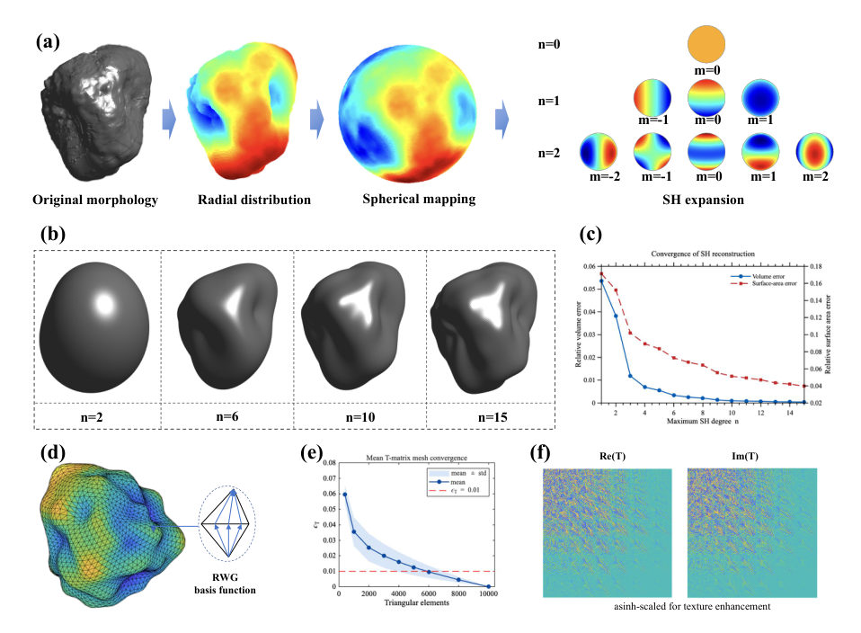
<figcaption class="paper-figure-caption"><b>Fig 1.</b> FIG. 1. Spectral representation of irregular 3D particle morphology and generation of T-matrix ground truth. (a) A compact star-shaped particle is converted from the original morphology to a radial distribution, mapped onto the unit sphere, and expanded in spherical harmonics. (b) Reconstructions with increasing maximum degree show how low-order modes describe global geometry and high-order modes recover finer surface structure. (c) Relative volume and surface-area errors quantify convergence of the truncated representation. (d) Triangular surface mesh used for boundary-element T-matrix computation, together with the Rao–Wilton–Glisson (RWG) basis function on adjacent triangles. (e) Mean...</figcaption>
</figure>
<figure class="paper-figure-card">
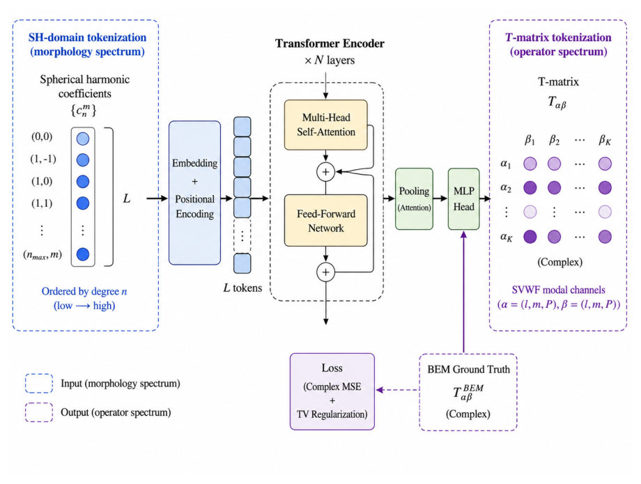
<figcaption class="paper-figure-caption"><b>Fig 2.</b> FIG. 2. Spectral-token Transformer for morphology-to-operator learning. Ordered spherical-harmonic coefficients are grouped into spectral tokens, processed by self-attention layers, aggregated into a latent representation, and decoded into the real and imaginary parts of the finite-order complex T-matrix.</figcaption>
</figure>
<figure class="paper-figure-card">
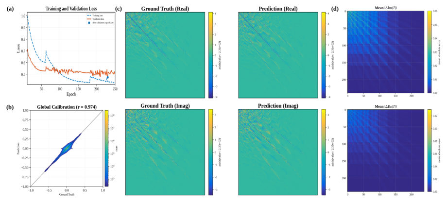
<figcaption class="paper-figure-caption"><b>Fig 3.</b> FIG. 3. Learning the intrinsic T-matrix from spectral shape tokens. (a) Training and validation losses. (b) Element-wise agreement between ground-truth and predicted T-matrix entries. (c) Ground-truth and predicted real and imaginary modal maps for one validation particle. (d) Mean relative errors of real and imaginary T-matrix components over the prediction set.</figcaption>
</figure>
<figure class="paper-figure-card">
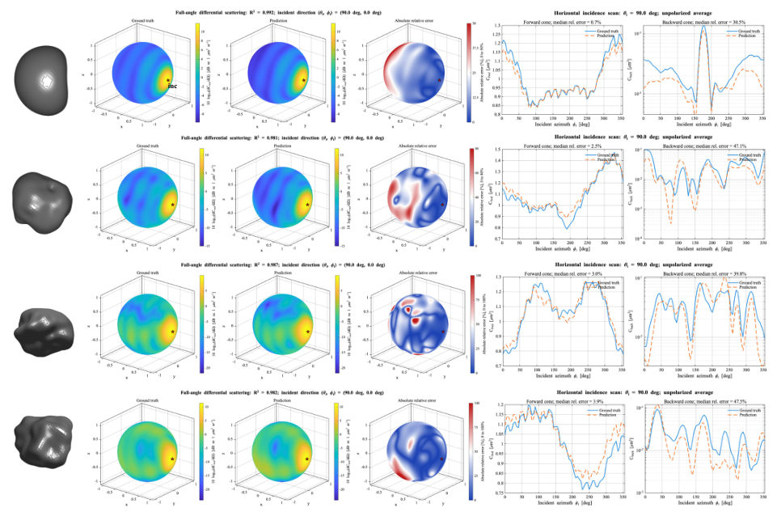
<figcaption class="paper-figure-caption"><b>Fig 4.</b> FIG. 4. Physical scattering validation of predicted T-matrices at 1064 nm. Each row shows one irregular particle, full-angle differential scattering maps from the ground-truth and predicted T-matrices, the pointwise relative error, and forward/backward cone integrals during horizontal incidence scans. The same predicted T-matrix is reused throughout the scan.</figcaption>
</figure>
<figure class="paper-figure-card">
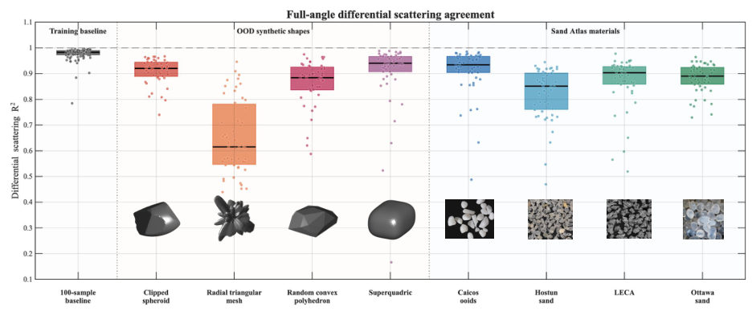
<figcaption class="paper-figure-caption"><b>Fig 5.</b> FIG. 5. Generalization across in-distribution, out-of-distribution synthetic, and real sand-particle morphologies. Box plots show R2 between full-angle differential scattering cross sections computed from reference and predicted T-matrices at 1064 nm for fixed incidence (θi, ϕi) = (90◦, 0◦).</figcaption>
</figure>
</div>

<p><strong>Summary.</strong> This paper introduces a novel dual spectral-domain neural network that predicts the optical scattering T-matrix for complex 3D particles. By encoding particle shape into spherical-harmonic coefficients and using a Transformer, it bypasses computationally intensive electromagnetic solves. This establishes an efficient, data-driven method for reusable, angle-resolved characterization of photonic materials.</p>
<p><strong>Why it may be interesting.</strong> While focused on classical optics, the methodology of representing complex physical inputs (geometry) and outputs (operator) in highly structured, compact spectral bases suitable for deep learning is analogous to techniques used in quantum state representation or Hamiltonian parameterization.</p>
<details>
<summary>Detailed structure</summary>
<p><strong>Main problem.</strong> The challenge is rapidly predicting optical scattering from arbitrarily shaped, complex 3D particles due to morphological variability and strong angular dependence of the response.</p>
<p><strong>Main result.</strong> A dual spectral-domain architecture successfully learns an intrinsic relationship mapping a compact geometry spectrum directly to the full T-matrix operator, enabling reusable, angle-resolved prediction.</p>
<p><strong>Method.</strong> The authors employ a spectral-token Transformer trained on 50,000 particles to map spherical-harmonic coefficients (morphology) to the complex T-matrix (scattering operator).</p>
<p><strong>Model / system.</strong> The system involves electromagnetic scattering from compact irregular particles. The model uses a dual spectral representation: geometry is compressed into an ordered spectrum of spherical-harmonic coefficients, and the response is encoded by the T-matrix in a spherical-vector-wave basis.</p>
<p><strong>Key observables.</strong> Full-angle differential scattering maps, incidence-angle scans, and the complex T-matrix itself.</p>
<p><strong>Important parameters / regimes.</strong> Wavelength (1064 nm), number of SH coefficients (e.g., 256), and generalization performance metrics like $R^2$ ($\approx 0.97$).</p>
<p><strong>Assumptions / limitations.</strong> The geometry can be sufficiently represented by a truncated spherical-harmonic spectrum, and the scattering physics can be captured by learning the T-matrix operator directly.</p>
<p><strong>Figures summary.</strong> Figures illustrate the workflow from morphology encoding to T-matrix computation; one figure shows the Transformer architecture mapping spectral tokens to $   ext{Re}(\mathbf{T})$ and $  ext{Im}(\mathbf{T})$; another validates full-angle scattering maps across incidence scans.</p>
<p><strong>Paper structure.</strong> The paper introduces the dual spectral model, details the training process using a spectral-token Transformer on ground-truth T-matrices derived from boundary element methods, demonstrates prediction accuracy for various angles/polarizations, and tests generalization to out-of-distribution shapes.</p>
</details>
<details>
<summary>Abstract</summary>
<p>Rapid prediction of optical scattering from arbitrarily shaped three-dimensional particles is important for particle optics and photonic characterization, but remains challenging because of the large variability of complex morphologies and the strong angular dependence of their scattering responses. To address both issues, a dual spectral-domain neural scattering model is introduced in which morphology and scattering are represented in physically ordered bases: particle geometry is compressed into only 256 spherical-harmonic coefficients, and the optical response is encoded by the complex T-matrix in a spherical-vector-wave basis. The morphology spectrum replaces high-dimensional Euclidean geometry representations, such as voxel grids, point clouds, or meshes, with a compact ordered descriptor, while the T-matrix represents a geometry-determined scattering operator that can be queried for different incidence directions, polarizations, and observation angles. A spectral-token Transformer trained on 50{,}000 irregular particles at 1064~nm maps the morphology spectrum directly to the T-matrix. The predicted operators recover modal structure and reproduce full-angle differential scattering maps and incidence-angle scans. Generalization to out-of-distribution synthetic shapes and natural sand-particle morphologies shows that the dual spectral architecture learns an intrinsic relation from the geometry spectrum to multipolar scattering. This establishes spectral-domain operator learning as a compact route for reusable, angle- and polarization-resolved optical scattering prediction of complex 3D particles.</p>
</details>
<p><sub><a href="#top">↑ back to top</a></sub></p>
<h3 id="other-secondary-papers-3">Other secondary papers (3)</h3>
<details>
<summary>Show other secondary papers</summary>

<p><a id="paper-2607.10348"></a></p>
<h3 id="anomalous-field-evolution-of-the-mixed-state-linewidth-in-the-second-superconducting-dome-of-lafeasomath1883math-math1884math"><a href="http://arxiv.org/abs/2607.10348v1">Anomalous field evolution of the mixed-state linewidth in the second superconducting dome of LaFeAsO$_{1-x}M_x$ ($M={\rm F,H}$)</a></h3>
<p><strong>Authors:</strong> Rustem Khasanov, Pierre Dalmas de Réotier, Samuele Sanna, Gianrico Lamura, Hubertus Luetkens, Matteo Moroni, Pietro Carretta, Rhea Kappenberger, Rowena Wachtel, Bernd Büchner, Sabine Wurmehl, Nikolai D. Zhigadlo<br>
<strong>Type:</strong> experiment · <strong>Category:</strong> other · <strong>PDF:</strong> <a href="https://arxiv.org/pdf/2607.10348v1">https://arxiv.org/pdf/2607.10348v1</a><br>
<strong>Analysis basis:</strong> full PDF text, analyzed in chunks</p>
<div class="figure-strip-hint">↔ Scroll figures horizontally</div>
<div class="paper-figures-scroll">
<figure class="paper-figure-card">
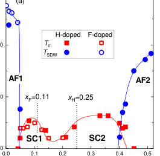
<figcaption class="paper-figure-caption"><b>Fig 1.</b> FIG. 1. (a) Schematic phase diagram of LaFeAsO1−xMx (M = F, H), based on Refs. 2–5, and 7. The dotted verti- cal lines mark the two compositions studied in the present work: xF = 0.11 (LaFeAsO0.89F0.11), located in the first su- perconducting dome SC1, and xH = 0.25 (LaFeAsO0.75H0.25), located in the second superconducting dome SC2. (b) and (c) Zero-field-cooled (ZFC) and field-cooled (FC) magnetic susceptibility curves for the xF = 0.11 and xH = 0.25 sam- ples, measured in applied fields of 2 and 0.3 mT, respectively. The straight lines illustrate the linear extrapolation proce- dure used to determine the superconducting transition tem- peratures Tc = 18.5 and 23.7 K.</figcaption>
</figure>
<figure class="paper-figure-card">
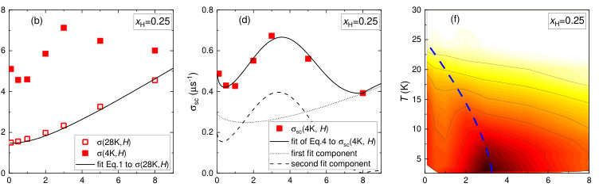
<figcaption class="paper-figure-caption"><b>Fig 2.</b> FIG. 3. (a) and (b) Field dependences of the Gaussian relaxation rate σ measured above Tc (T = 26 K for xF = 0.11 and T = 28 K for xH = 0.25) together with the corresponding data taken below Tc at T = 4 K. The solid lines are fits of Eq. (1) to the normal-state data. (c) and (d) The superconducting contribution to the µSR linewidth, σsc, at T = 4 K, obtained by subtracting the normal-state contribution in quadrature according to Eq. (2). The solid lines are fits based on the model of Ref. 16; see text for further details. (e) and (f) Contour plots of σsc(T, H) for xF = 0.11 and xH = 0.25, respectively. For xH = 0.25, the dashed line traces the field position Hσ,max(T) of the ridge of local...</figcaption>
</figure>
</div>
<p><strong>Summary.</strong> This work uses muon-spin rotation ($\mu$SR) to compare the mixed-state linewidths of two superconducting domes in iron pnictides. The key finding is that while one dome (SC1) shows expected field behavior, the other (SC2) exhibits an anomalous local maximum. This anomaly points toward a distinct electronic mechanism in SC2, specifically enhanced Pauli-paramagnetic effects.</p>
<p><strong>Why it may be interesting.</strong> The comparison between two distinct superconducting domes in the same material family provides an excellent platform to study how subtle changes in electronic structure (doping/substitution) can lead to fundamentally different magnetic responses, which is relevant to understanding complex many-body physics near quantum critical points.</p>
<details>
<summary>Detailed structure</summary>
<p><strong>Main problem.</strong> The study investigates the anomalous field evolution of the mixed-state linewidth in two distinct superconducting domes (SC1 and SC2) within the $    ext{LaFeAsO}_{1-x}M_x$ family.</p>
<p><strong>Main result.</strong> While SC1 shows conventional monotonic field dependence, SC2 exhibits a pronounced local maximum near 3 T at 4 K, suggesting an additional field-induced contribution from enhanced Pauli-paramagnetic effects absent in SC1.</p>
<p><strong>Method.</strong> Transverse-field muon-spin rotation/relaxation ($\mu$SR) measurements were used to probe the internal-field distribution in the mixed state of iron pnictides.</p>
<p><strong>Model / system.</strong> The system is based on layered iron-based superconductors, comparing $  ext{LaFeAsO}<em 0.11>{0.89} ext{F}</em>}$ (SC1) and $  ext{LaFeAsO<em 0.25>{0.75} ext{H}</em>$ (SC2). The analysis compares the superconducting linewidth ($\sigma_{sc}$) derived from $\mu$SR data.</p>
<p><strong>Key observables.</strong> Mixed-state linewidth ($\sigma_{sc}(T, H)$), normal-state linewidth ($\sigma_n(H)$), and the field position of local maxima ($H_{\sigma,\max}(T)$).</p>
<p><strong>Important parameters / regimes.</strong> Temperature (4 K), magnetic field (up to 8 T), doping concentrations ($x_{	ext{F}}=0.11$ vs $x_{	ext{H}}=0.25$).</p>
<p><strong>Assumptions / limitations.</strong> The anomalous behavior in SC2 is attributed to an additional field-induced contribution associated with enhanced Pauli-paramagnetic effects, which differs fundamentally from the physics governing SC1.</p>
<p><strong>Figures summary.</strong> Figures illustrate the phase diagram of the superconducting domes and show temperature/field dependence plots ($\sigma(T)$ vs $H$) for both samples, highlighting the distinct low-temperature field behaviors.</p>
<p><strong>Paper structure.</strong> The paper analyzes $\mu$SR data to compare SC1 and SC2. It first establishes the normal-state background, then isolates $\sigma_{sc}$. The core of the work compares the field dependence: monotonic decrease for SC1 versus nonmonotonic behavior with a local maximum for SC2.</p>
</details>
<details>
<summary>Abstract</summary>
<p>We report a transverse-field muon-spin rotation/relaxation ($μ$SR) study of the internal-field distribution in the mixed state of LaFeAsO$_{0.89}$F$_{0.11}$ and LaFeAsO$_{0.75}$H$_{0.25}$, representative of the first (SC1) and second (SC2) superconducting domes of the LaFeAsO$_{1-x}M_x$ ($M={\rm F,H}$) family, respectively. Below the superconducting transition temperature $T_{\rm c}$, the linewidth of the internal-field distribution increases in both samples, indicating the formation of a vortex lattice. Above $T_{\rm c}$, the linewidth remains field dependent and increases approximately linearly with field, consistent with broadening of the powder spectrum caused by an anisotropic Knight shift. After subtraction of this normal-state contribution, the superconducting linewidth $σ_{\rm sc}$ exhibits qualitatively different field dependences in the two samples. At 4K, the SC1 ($x_{\rm F}=0.11$) sample shows the expected monotonic decrease with increasing field, whereas the SC2 ($x_{\rm H}=0.25$) sample develops a pronounced local maximum near 3T. A contour representation of $σ_{\rm sc}(T,H)$ further reveals a ridge of local maxima whose field position, $H_{σ,\max}(T)$, shifts to lower fields upon warming and disappears near $T_{\rm c}$. The anomalous field evolution observed in the SC2 sample is consistent with an additional field-induced contribution associated with enhanced Pauli-paramagnetic effects, highlighting the distinct electronic character of the two superconducting domes.</p>
</details>
<p><sub><a href="#top">↑ back to top</a></sub></p>

<p><a id="paper-2607.11425"></a></p>
<h3 id="interference-enhanced-large-electron-phonon-coupling-from-raman-active-breathing-modes-in-moire-semiconductors"><a href="http://arxiv.org/abs/2607.11425v1">Interference-Enhanced Large Electron-Phonon Coupling from Raman-active Breathing Modes in Moiré Semiconductors</a></h3>
<p><strong>Authors:</strong> Ning Mao, Shaozheng Wang, Cheng Xu, Xumin Chang, Kenji Watanabe, Takashi Taniguchi, Claudia Felser, Shengwei Jiang, Yang Zhang<br>
<strong>Type:</strong> both · <strong>Category:</strong> other · <strong>PDF:</strong> <a href="https://arxiv.org/pdf/2607.11425v1">https://arxiv.org/pdf/2607.11425v1</a><br>
<strong>Analysis basis:</strong> full PDF text, analyzed in chunks</p>
<div class="figure-strip-hint">↔ Scroll figures horizontally</div>
<div class="paper-figures-scroll">
<figure class="paper-figure-card">
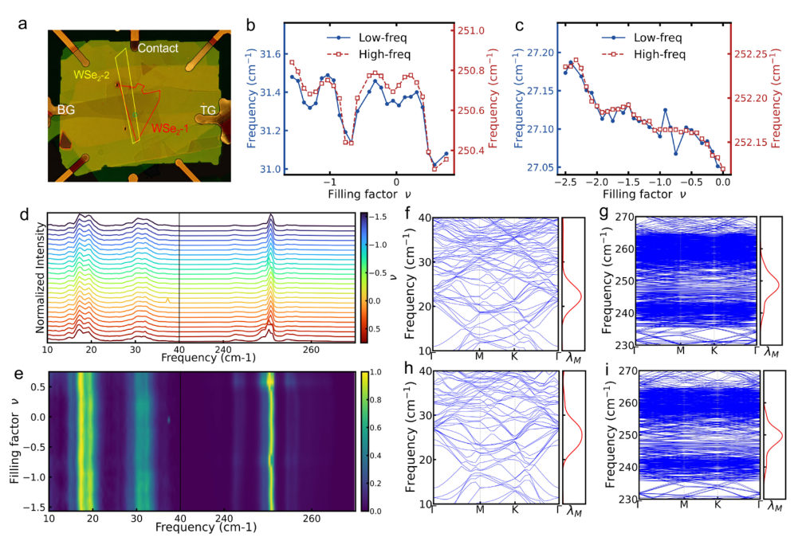
<figcaption class="paper-figure-caption"><b>Fig 1.</b> FIG. 1. Filling-dependent Raman spectroscopy of moir´e phonons in t-WSe2. a, Device used for Raman character- ization of t-WSe2 at 4.4◦. The red and yellow regions correspond to the two individual layers, and the green dots mark the positions of the Raman laser spot. b, Peak positions of the low- and high-frequency modes as a function of filling factor ν for t-WSe2 at 4.4◦. c, Peak positions of the low- and high-frequency modes as a function of filling factor ν for t-WSe2 at 3.15◦. d, Stacked Raman spectra at different filling factors ν, vertically offset for clarity. e, False-color map of the normalized Raman intensity as a function of frequency and filling factor ν. f, g, Phonon...</figcaption>
</figure>
<figure class="paper-figure-card">
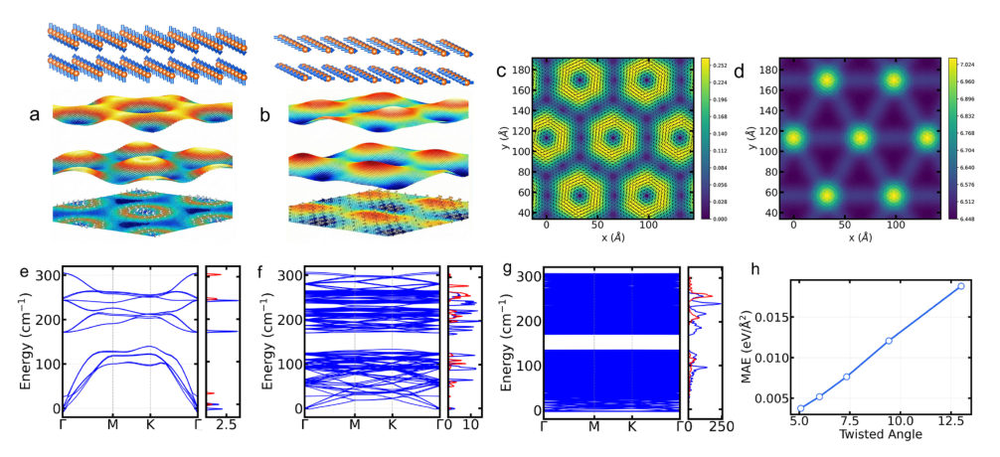
<figcaption class="paper-figure-caption"><b>Fig 2.</b> FIG. 2. Lattice relaxation in twisted TMDs and its impact on the moir´e phonon spectrum. a, b, Schematic illustrations of the (a) layer breathing mode (LBM) and (b) layer shear mode (LSM); in each, the upper panel shows the mode in the bilayer and the lower panel the corresponding moir´e phonon. c, d, Intralayer displacement (c) and interlayer distance (d) maps of the relaxed 2.88◦t-WSe2 structure obtained from density functional theory. The former shows the in-plane relaxation- induced displacements of W atoms in the top layer, and the latter the vertical separation between W atoms in the top and bottom layers. e–g, Phonon dispersions of (e) untwisted bilayer WSe2 and t-WSe2 at twist...</figcaption>
</figure>
<figure class="paper-figure-card">
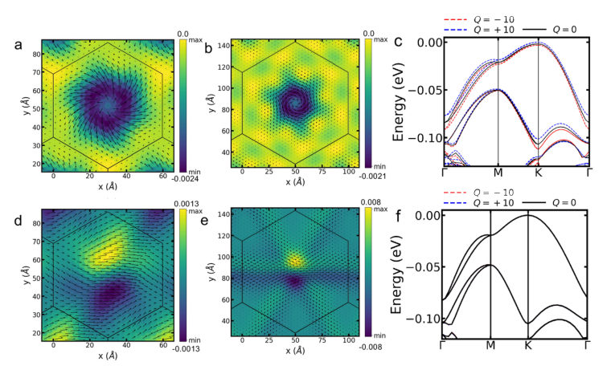
<figcaption class="paper-figure-caption"><b>Fig 3.</b> FIG. 3. Influence of the LBM and LSM on the moir´e electronic structure. a, b, Vibration patterns of low- frequency phonon modes in AA-stacked t-WSe2. LBM patterns at twist angles of (a) 5.08◦and (b) 1.89◦, respectively. c, Electronic band structures of t-WSe2 under different LBM distortions. d, e, LSM patterns at twist angles of (d) 5.08◦and (e) 1.89◦, respectively. The color map represents the out-of-plane displacement component, while the arrows indicate the in-plane displacement vectors. f, Electronic band structures of t-WSe2 under different LSM distortions. The blue, red, and green lines represent the equilibrium band structure and the band structures under positive and negative...</figcaption>
</figure>
<figure class="paper-figure-card">
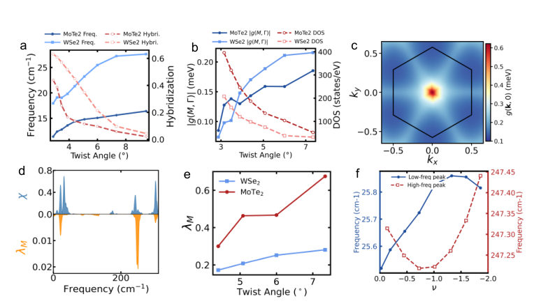
<figcaption class="paper-figure-caption"><b>Fig 4.</b> FIG. 4. Twist-angle dependence of the electron–phonon coupling. a, Twist-angle dependence of (left) the LBM frequency and (right) the phonon hybridization between the out-of-plane breathing mode and in-plane modes. A hybridization value of 0 denotes a purely out-of-plane breathing mode, while a value of 1 denotes a purely in-plane phonon mode. b, Absolute magnitude of the EPC matrix element g(M, Γ) of the first band at the M point. c, Distribution of the LBM-induced EPC matrix element gLBM(k, Γ) for t-WSe2 at a twist angle of 5.08◦, evaluated on a 100×100 k-mesh. d, Mode-resolved similarity χ (upper panel) and mode-resolved coupling constant λM (lower panel). e, Total λM as a function of...</figcaption>
</figure>
</div>
<p><strong>Summary.</strong> This research investigates the source of superconductivity in twisted TMD moiré semiconductors by calculating the electron-phonon coupling (EPC). The authors introduce an 'interference selection rule' based on lattice reconstruction patterns, showing that only specific phonon modes couple strongly. This mechanism points to a substantial and potentially dominant role for phonons in mediating pairing at large twist angles where superconductivity is observed.</p>
<p><strong>Why it may be interesting.</strong> The work provides a concrete mechanism—lattice reconstruction interference—that selects which vibrational modes couple strongly to electrons, offering a powerful diagnostic tool for understanding pairing mechanisms beyond simple continuum models.</p>
<details>
<summary>Detailed structure</summary>
<p><strong>Main problem.</strong> The central question is determining whether superconductivity in moiré semiconductors is driven by electronic correlations, phonons, or both, which requires calculating the electron–phonon coupling (EPC).</p>
<p><strong>Main result.</strong> A lattice reconstruction interference mechanism was discovered where phonon modes whose displacement texture matches the static lattice-reconstruction pattern couple strongly, suggesting a potentially dominant phonon contribution to superconductivity at large twist angles.</p>
<p><strong>Method.</strong> The study combines filling-dependent Raman spectroscopy with machine-learning first-principles calculations to calculate EPC mode by mode in large supercells.</p>
<p><strong>Model / system.</strong> The system involves moiré superlattices formed from twisted transition metal dichalcogenides (TMDs) like t-WSe2 and t-MoTe2, which exhibit distinct lattice reconstruction patterns (MM, MX, XM domains).</p>
<p><strong>Key observables.</strong> EPC strength ($\lambda$), Raman-active moiré phonon frequencies, the pattern-matching parameter $\chi$, and the total EPC constant $\lambda$ peaking near $7.34^\circ$.</p>
<p><strong>Important parameters / regimes.</strong> Twist angles (e.g., $1.89^\circ$ to $13^\circ$), carrier filling ($
u$), and the lattice reconstruction pattern.</p>
<p><strong>Assumptions / limitations.</strong> The analysis assumes that simple frequency shifts are insufficient, necessitating a full first-principles account incorporating intricate lattice reconstruction patterns for accurate EPC quantification.</p>
<p><strong>Figures summary.</strong> Figures illustrate Raman spectroscopy results showing peak shifts vs. filling; they also map mode-resolved EPC strength and show the twist-angle dependence of $\lambda$, confirming its maximum near the superconducting regime.</p>
<p><strong>Paper structure.</strong> The paper establishes the problem (superconductivity mechanism) by detailing advanced experimental measurements (Raman) alongside complex computational modeling (MLFFs). It then develops a theoretical framework using an interference selection rule ($\chi$) to calculate mode-resolved EPC, culminating in the identification of phonon dominance at specific twist angles.</p>
</details>
<details>
<summary>Abstract</summary>
<p>Superconductivity was recently observed in twisted WSe2 and MoTe2, raising a central question: is the pairing driven by electronic correlations, by phonons, or by both? Answering it requires determining the electron-phonon coupling (EPC) in these moiré semiconductors, whose calculation in realistic supercells of thousands of atoms lies beyond the reach of direct first-principles methods. Here we combine filling-dependent Raman spectroscopy with machine-learning first-principles calculations to obtain the EPC mode by mode in supercells of up to tens of thousands of atoms. Raman reveals only a few moiré phonons whose frequencies shift strongly with filling; we trace this to an interference selection rule: a phonon couples strongly only when its displacement texture matches the static lattice-reconstruction pattern, and is otherwise suppressed by destructive interference. The rule selects the low- and high-frequency breathing modes seen in Raman and makes the coupling peak at large twist angles, near those at which superconductivity appears. Lattice-reconstruction interference thus emerges as an organizing principle for moiré EPC, pointing to a substantial, potentially dominant, phonon contribution to large-angle pairing.</p>
</details>
<p><sub><a href="#top">↑ back to top</a></sub></p>

<p><a id="paper-2607.10332"></a></p>
<h3 id="superconducting-dome-and-field-enhanced-superconductivity-of-pld-synthesized-nd1-xeuxnio2-thin-films"><a href="http://arxiv.org/abs/2607.10332v1">Superconducting dome and field-enhanced superconductivity of PLD synthesized Nd1-xEuxNiO2 thin films</a></h3>
<p><strong>Authors:</strong> Wenlong Yang, Qiang Zhao, Xingke Fu, Gaofei Ren, Zhongjing Wu, Zhen Chen, Jianping Sun, Boseng Wang, Jiacai Nie, Pengtao Yang, Jinguang Cheng<br>
<strong>Type:</strong> experiment · <strong>Category:</strong> strongly correlated electrons · <strong>PDF:</strong> <a href="https://arxiv.org/pdf/2607.10332v1">https://arxiv.org/pdf/2607.10332v1</a><br>
<strong>Analysis basis:</strong> full PDF text, analyzed in chunks</p>
<div class="figure-strip-hint">↔ Scroll figures horizontally</div>
<div class="paper-figures-scroll">
<figure class="paper-figure-card">
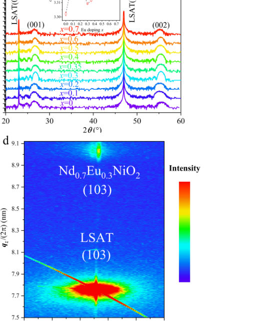
<figcaption class="paper-figure-caption"><b>Fig 1.</b> Fig. 1 Structural characterization of Nd1−xEuxNiO2 thin films. (a) XRD θ–2θ scans of the Nd0.7Eu0.3NiO3 precursor film and the Nd0.7Eu0.3NiO2 film obtained after CaH2 reduction. (b) XRD patterns of Nd1−xEuxNiO2 films for Eu doping levels x = 0 to 0.6. The inset shows the room-temperature c-axis lattice constant d as a function of Eu content x. (c, d) Reciprocal space maps of the Nd0.7Eu0.3NiO3 and Nd0.7Eu0.3NiO2 films. Figure 1(a) shows the XRD θ–2θ scans of the Nd0.7Eu0.3NiO3 perovskite precursor film and the same film after CaH2 reduction. The (001) and (002) reflections of the precursor at 23.82° and 48.59° shift to 26.82° and 55.49° upon reduction, confirming the successful formation of...</figcaption>
</figure>
<figure class="paper-figure-card">
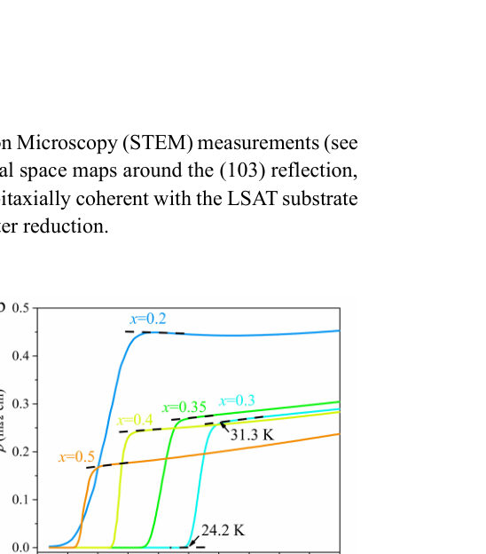
<figcaption class="paper-figure-caption"><b>Fig 2.</b> Fig. 2 Electrical transport properties of Nd1-xEuxNiO2 films. (a) Temperature dependence of resistivity ρ(T) for x = 0-0.7. (b) Enlarged view of the low-temperature (2-50K) ρ(T) curves for superconducting films with x = 0.2-0.5. Figure 2(a) displays the resistivity ρ(T) of Nd1-xEuxNiO2 films for x = 0-0.7. In the underdoped regime (x = 0, 0.1), a low-temperature resistivity upturn signifies weak insulating behavior, which is progressively suppressed with increasing Eu doping content. Superconductivity first emerges at x = 0.2, when an upturn persists just above the onset Tc. For x = 0.3-0.5, zero resistance is achieved and the normal-state ρ(T) exhibits purely metallic character without any...</figcaption>
</figure>
<figure class="paper-figure-card">
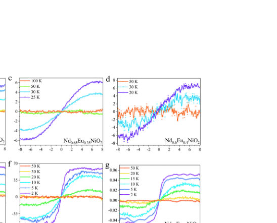
<figcaption class="paper-figure-caption"><b>Fig 3.</b> Fig. 3 Hall effect in Nd1-xEuxNiO2. (a) Temperature dependence of the Hall coefficient RH for different Eu doping levels x. The black dashed line marks the sign-change boundary. (b)-(g) Non-linear Hall resistance ∆Rxy =Rxyexp-RxyL as a function of temperature for x = 0.1, 0.35, 0.4, 0.5, 0.6 and 0.7.</figcaption>
</figure>
<figure class="paper-figure-card">
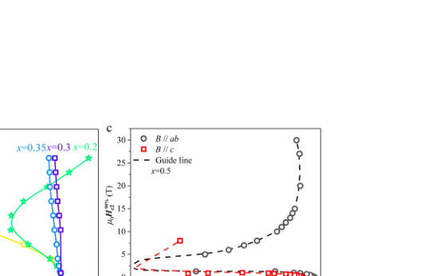
<figcaption class="paper-figure-caption"><b>Fig 4.</b> Fig. 4 Upper critical field of Nd1-xEuxNiO2. (a) Out-of-plane and (b) in-plane upper critical fields μ0Hc2 as functions of reduced temperature T/Tc50%ρn for x = 0.2-0.4, where Tc50%ρn is defined by the 50% resistivity criterion. (c) Temperature dependence of μ0Hc2 for x = 0.5; the dashed lines are guides to the eye. Figure 4(a) and (b) present the out-of-plane (B // c) and in-plane (B // ab) upper critical fields μ0Hc2 as functions of the reduced temperature T/Tc50%ρn for x = 0.2, 0.3, 0.35 and 0.4 films. For the x = 0.2 and 0.4 films, a subtle kink appears near 4 T in both field orientations, signaling the onset of field-enhanced superconductivity. In contrast, the x = 0.3 and 0.35 films...</figcaption>
</figure>
<figure class="paper-figure-card">
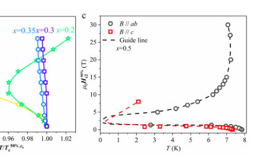
<figcaption class="paper-figure-caption"><b>Fig 5.</b> Fig. 5 Phase diagram of Nd1−xEuxNiO2. (a) Doping dependence of the superconducting transition temperature superimposed by a color contour plot of the</figcaption>
</figure>
</div>
<p><strong>Summary.</strong> The study reports on synthesizing and characterizing superconducting $ ext{Nd}_{1-x}   ext{Eu}_x   ext{NiO}_2$ thin films using PLD. Key findings include establishing a wide superconducting dome with high $T_c$ values and demonstrating field-enhanced superconductivity in both underdoped and overdoped regions. This work provides crucial experimental evidence regarding the role of magnetic rare-earth ions in these exotic correlated superconductors.</p>
<p><strong>Why it may be interesting.</strong> This work explores unconventional superconductivity in nickelates, a class of materials highly relevant to strongly correlated electron physics, which often shares theoretical links with high-Tc cuprates studied in AMO/condensed matter theory.</p>
<details>
<summary>Detailed structure</summary>
<p><strong>Main problem.</strong> The study investigates the superconducting dome formation, field-enhanced superconductivity, and re-entrant behavior in infinite-layer nickelates ($  ext{Nd}_{1-x}   ext{Eu}_x   ext{NiO}_2$).</p>
<p><strong>Main result.</strong> PLD synthesis successfully produced high-quality films exhibiting a wide superconducting dome with an optimal $T_c \approx 31$ K, and the system displays robust field enhancement in both underdoped and overdoped regimes.</p>
<p><strong>Method.</strong> The research employed Pulsed Laser Deposition (PLD) for film synthesis, followed by electrical transport measurements including resistivity ($
ho(T)$), Hall effect ($R_H$), and upper critical field ($\mu_0 H_{c2}$).</p>
<p><strong>Model / system.</strong> The physical system is the infinite-layer nickelate $   ext{Nd}_{1-x}   ext{Eu}_x   ext{NiO}_2$ thin film, where superconductivity is modulated by Eu doping ($x$). The properties are linked to the magnetic rare-earth Eu$^{2+}$ ions.</p>
<p><strong>Key observables.</strong> Superconducting transition temperature ($T_c$), superconducting dome width (doping dependence), field enhancement magnitude, and nonlinear Hall resistance ($\Delta R_{xy}$).</p>
<p><strong>Important parameters / regimes.</strong> Doping concentration $x$ ($0.2 \le x \le 0.5$), magnetic field strength (up to 35.6 T), and temperature range.</p>
<p><strong>Assumptions / limitations.</strong> The observed field enhancement suggests mechanisms beyond the simple Jaccarino-Peter effect, and nonlinear Hall response is attributed to magnetic impurity scattering.</p>
<p><strong>Figures summary.</strong> Figures illustrate XRD confirming lattice changes with doping, $
ho(T)$ showing superconducting transitions across the dome, and magnetotransport data detailing $H_{c2}$ kinks and re-entrant behavior in various doping regimes.</p>
<p><strong>Paper structure.</strong> The paper details synthesis via PLD/reduction, presents transport measurements ($
ho$, Hall), analyzes the doping dependence of $T_c$ (the superconducting dome), and investigates field effects to characterize the underlying pairing mechanism.</p>
</details>
<details>
<summary>Abstract</summary>
<p>We report on the synthesis of infinite-layer Nd1-xEuxNiO2 (0&lt;x&lt;0.7) thin films using pulsed laser deposition (PLD) followed by topotactic reduction with CaH2. Resistivity measurements on these films reveal a superconducting dome within the doping range 0.2&lt;x&lt;0.5, which is wider than that achieved by molecular beam epitaxy and comparable to that obtained by chemical synthesis. The x=0.3 PLD film exhibits the optimal superconducting transition temperature Tc~31 K, much higher than those grown by other vacuum epitaxial techniques. This result indicates that PLD is an ideal approach for fabricating high-quality, high-Tc Nd1-xEuxNiO2 superconducting films. Magneto-transport measurements reveal robust field-enhanced and re-entrant superconductivity in both underdoped and overdoped regimes. At low temperatures just above the onset Tc, the Hall resistance exhibits nonlinear behavior, which may originate from magnetic impurity scattering. These results highlight the crucial role of magnetic rare-earth Eu2+ ions in producing the exotic physical properties of the infinite-layer nickelates.</p>
</details>
<p><sub><a href="#top">↑ back to top</a></sub></p>
</details>
</details>

<hr>
<p>
<a href="index.html">← Index</a>
 · <a href="papers_09.html">← Previous</a>
</p>
<hr>

</body>
</html>
